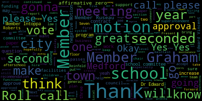
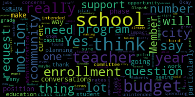
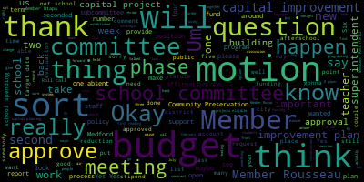
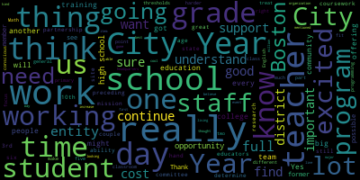

[Lungo-Koehn]: Please be advised that on June 24th, 2024 at 5 p.m. there'll be a session meeting in the med school community to be held remotely via Zoom. The purpose of this meeting will be to attend continued business. This meeting is being recorded. The meeting can be viewed live on the Medford Public Schools YouTube channel through Medford Community Media on your local cable channel, Comcast 98 or 22 and Verizon 43, 45, 47. The meeting will be recorded Again, since the meeting will be held remotely, participants can log or call in by using the following links. And the meeting ID is 915-1478-9149. Comments or questions can be submitted during the meeting by emailing medfordsc at medford.k12.ma.us. Those submitting questions or comments must include the following information, your first and last name, your Medford street address, your question or comment. Roll call member Rousseau.
[Ruseau]: Second. Member Brandman.
[Christina]: Present.
[Ruseau]: Member Graham.
[Christina]: Here.
[Ruseau]: Member Ntapa. Here. Member Olapade. Present. Member Rahm.
[Lungo-Koehn]: Present.
[Ruseau]: Member Ruseau present. Mayor Lungo-Koehn.
[Lungo-Koehn]: Present. Seven present, zero absent. We all may rise and salute the flag. I pledge allegiance to the flag of the United States of America and to the Republic for which it stands, one nation, under God, indivisible, with liberty and justice for all. We have executive session pursuant to General Laws 30A. A three, the Medford School Committee will convene an executive session to discuss the negotiation status with Medford Educational Secretaries, AFSCME Council 93, and Teamsters Local 25 Custodians because an open meeting will have a detrimental effect on the bargaining position of the committee and the chair so declares. Is there a motion on the floor?
[Reinfeld]: Motion to enter executive session.
[Lungo-Koehn]: Is there a member of Reinfeld, seconded by? Second. Member Topper, roll call, please.
[Ruseau]: Member Branley.
[Lungo-Koehn]: Yes.
[Ruseau]: Member Graham.
[Lungo-Koehn]: Yes.
[Ruseau]: Member Ntapa. Yes. Member Olapade. Yes. Member Ranfro. Yes. Member, so yes, Mayor Lungo-Koehn.
[Lungo-Koehn]: Yes, 70 affirmative, zero negative. Motion is approved to go into executive session. Okay, we have everybody back. We're gonna go to continued business, which is A, possible ratification of the Medford Educational Secretary's AFSCME Council 93 contract. And is there a motion on the floor for approval?
[Graham]: Motion to approve the Medford Educational Administrative Assistant's AFSCME 93 contract.
[Lungo-Koehn]: Seconded by member Branley. A roll call vote, please.
[Ruseau]: For Branley.
[Lungo-Koehn]: Yes.
[Ruseau]: Member Grant. Yes. Member Ntapa.
[Intoppa]: Yes.
[Ruseau]: Member Olapade. Yes. Member Rheinfeld. Yes. Member Risseau. Yes. Mayor Lingo-Kern.
[Lungo-Koehn]: Yes. So the affirmative zero and the negative motion passes. Great, great work to the team. Next up is the possible revocation of the Teamsters Local 25 custodial contract, which is a six year deal. Is there a motion on the floor for approval?
[Intoppa]: So moved.
[Lungo-Koehn]: Member Ntapa, seconded by? I'll second. Member Branley, roll call please.
[Ruseau]: Member Branley.
[Graham]: Yes.
[Ruseau]: Member Grant.
[Graham]: Yes.
[Ruseau]: Member Ntapa. Yes. Member Olapade. Yes. Member Rheinfeld. Yes. Member, so yes, Mayor Langoca.
[Lungo-Koehn]: Yes, seven in the affirmative, zero in the negative. Motion passes. Again, great work, thank you. We also have a report on the 2023-2024 school year superintendent evaluation goals. Dr. Edward Vinson.
[SPEAKER_10]: You're muted, Dr. Eby.
[Edouard-Vincent]: Thank you. I'm sorry. I was going to grab the document. I'm going to screen share. The presentation this evening is going just to be providing the committee with an update on the goals that were approved at the January 8th, 2024 meeting. And so the district improvement goal for this school year is that the Medford Public Schools will improve systems and structures that directly impact student services, student and family and communications and school facilities and operations. And so there were 11 key actions that the committee requested to see movement on. And so I want to report out on the district goal, the student learning goal and the professional practice goal. So under key action number one, improve accessibility to facilities and develop a ticketing system. We have completed that first task. We have partnered with operations hero, which will be the system that will operations hero is a system that we will be using to manage our programs and ticketing systems that are being entered into the ticketing system for the district to address. That was one of the first pieces that we were able to secure this year. And so operations hero is the portal that will be used for our school facilities. And the team consisted of Dr. Cushing and principals and a few others who helped to say what the ticketing system could look like for the Medford public schools. Key action number two was regarding consistent communications to families. And three was effective, appropriate, and consistent messaging when there were also emergency scenarios. And so from a communications perspective, we are actively using some more. We are actually using final site, which is our website mass notifications and We are using talking points which are has been getting tremendous traction. And it seems like my computer's going a little slowly, but I'll try to explain what the links are that I've hyperlinked within the document for your review. But for Talking Points, this school year, we sent over 803,705 messages were sent out to families. And so this talking points is able to translate. It shows all the languages, English, Portuguese, Spanish, Haitian Creole, simplified Chinese, Arabic, Bengali, Vietnamese, Nepali, Punjabi, Albanian, and there are many other languages, but also we use it for English, and as you can see, this turquoise blue, it goes out to the whole community and it's really being used effectively. Again, here, EL students is represented by the turquoise bar, non-EL, and then unknown, but again, it is being used effectively. a tool that we are using as a district, oh, a tool that we are using as a district, and it is yielding really great communication, quick communication with families.
[SPEAKER_10]: One moment. Go back. Apologize.
[Edouard-Vincent]: I apologize, my... Here we go. Okay. In terms of a different outcome, which I didn't address, was to finalize the employee handbook. Hyperlinked within this document is an employee handbook that shall be completed. It is about 97% completed for the Medford Public Schools. There are a few areas that we are just receiving additional consult on, and I am continuing to work with Enough Abuse. They have a portion, a separate, employee handbook or an agreement about rules of engagement with students. And so I am also receiving consult from them. So our hope is to have this employee handbook fully finalized by the summer to be able to launch and start the new school year. Another area that we have addressed in terms of district improvement goals is accessibility of parking outside in front of Medford Public Schools. The loop at the high school here had limited ADA accessible parking on the loop. And so what we did was we took the side closest to the building and we added accessible parking in front of the entire high school loop. And on the opposite side of the loop is now visitor parking. So family members of the community, parents that are coming on campus, they can come to Medford High School, find parking on the loop, come in for meetings, come in to register, and come in and out. And so that was something that we did to make the high school a more welcoming environment, and especially where we are working on making the high school campus more ADA accessible by having multiple ADA parking spots at the front of the building. It is definitely more accessible for members of our community that need greater and closer access to the building. And we also have one reserved spot for our military veterans on the visitor side. In addition to that, a charge was to reestablish the capital planning committee and begin looking at building systems to create a replacement timeline for individual systems that may not be working properly. strategic and capital planning subcommittee did meet March 26th and there was a May 21st meeting. The agenda and minutes are hyperlinked and attached there. In addition to that, Bullet number five, seizing every opportunity to collaborate with the Massachusetts School Building Authority. We have an active school building MSBA group, and there is even a separate website which is buildingmhs.org. And so you can access it through the district's Medford Public Schools website, or you can go directly to buildingmhs.org. And that was work that was done this year to, again, secure the website for the work that's taking place with MSBA and the Medford High School Building Committee. So that was bullet number five. Number six, about enhancing human resource practices, job posting, hiring, payroll management, and labor relations. We have put different systems and structures in place, working closely with the finance office. We've added codes so that it's more easily identifiable for the district to be able to say where the funding sources are coming from, and that work is continuing to be done. This year, there was a request for a timely budget process. That budget process did take place. I hyperlinked in one of the slide decks from a timely budget process that took place. We also had an excessive heat protocol. That was an ask, that task was completed this year. And at an earlier meeting, that meeting was, I believe it looks like it was the 11th of May, where the school committee approved the excessive heat protocol for what we need to do when we have extreme temperatures. Revised middle school and high school schedules, we worked with a partner. And again, here, hyperlinkedin is the presentation of the Medford High School scheduling opportunity review. And this abbreviated slide deck explains the potential models that will provide greater scheduling, and here at the high school where we have the six-day schedule and the five-day schedule, what a potential schedule could look like with the five-day and the six-day merging and becoming a five-day schedule, a seven-period day is one of the proposed model that was recommended. by our outside partner. And there were several staff that also had worked on potential schedules, and the schedules were very similar. Bullet number 10 was implementing the new bullying policy, full implementation. In addition to having updated bullying form, which is hyperlinked in here, we also have bullying report slides, presentations that have taken place for administrators. Ms. Bowen, our director of student services oversees that and reports all information to DESE. Um, the 11th request was the outcome of the high school climate study, and within that, I hyperlinked in, um, the presentation from, uh, Principal Cabral, Ms. Cabral at the high school, providing an update on where the high school is with, um, uh, the high school climate, and it has improved markedly, and we're really, really, um, really, really pleased about the progress. In terms of the student learning goal, we have included what our students are doing here under key actions, things that are supporting the development and the implementation of the new curriculum into reading. Here is the elementary update that Dr. Galussi shared, which gives a lot of information that is related to inter-reading data, and this goes out to all elementary staff and the elementary level to let the community know as well where are students, how are they performing with their work and data. some of the outcomes that were asked to look at NWEA math growth data. The end of year testing window closed on June 10th, June 12th of this year. And so there is preliminary data for DIBELS and professional development. And at the start of next school year, Dr. Galluzzi will present you know, the most current updated information on how it ended, but we wanted to provide you with some data as this was an ask on how are we making progress with our student learning goals. Under professional practice goal, I am still working collaboratively with MASS, Massachusetts Association of School Superintendents, and DESE, Department of Elementary and Secondary Education. I am part of the BIPOC Superintendent Network. And in addition to that, The BIPOC network is for superintendents of color. And I'm part of leading now, which is a national superintendents group. And I will be attending the leading now convening this July. In July, we will be meeting in Columbus, Ohio, for a retreat of superintendents across the country. And I've linked some pertinent information from DESE and MASS on what the sessions entail. I've hyperlinked some slide decks in here and what is happening with leading now and how they work with superintendents. to support school districts in the in today's era. And again, we do look at race, equity, diversity, and inclusion, which is just another way of saying DEI, but that's what REDI stands for, R-E-D-I. And then I continue to collaborate with our district attorney's office. And I included here in January, DA Ryan invited all superintendents and chiefs of police and chiefs of fire to a convening and we met in Lexington where they had a wonderful presentation to talk to superintendents, chiefs of police, and chiefs of fire just about our roles and the work that we're doing supporting our communities. So I just wanted to present that data to you, the committee, and I know that you will take it and work with it. And, you know, I'll be open to emails or any other, respond to any questions that I can respond to right now, but I can also respond to specific questions if you choose to send them to me electronically. That is my presentation.
[Lungo-Koehn]: Thank you, Dr. Edward Vincent. If there's no questions, are there any questions from the committee?
[Graham]: Mayor?
[Lungo-Koehn]: Member Graham.
[Graham]: I just wanted to talk about what we have done in the past from a process perspective, since we have so many new members. just to sort of get the ball rolling. So this is the superintendent self-evaluation, and then we as a committee have to compile our evaluation and then present it back in an open session just like this. But what we did last year that seemed to work was that the evaluation subcommittee met, had a meeting, established a timeline, of all the steps that had to happen from our perspective, and then held a separate, a second meeting where they compiled the results from all the different pieces of evaluation from each of us individually, and then that came to the floor to be to be reviewed here and presented and ultimately approved. So I think those are the next steps is for that committee. And I think member Olapade chairs that committee. So I think the next steps would be for you all to find a time to meet and establish the right timeline. And we can dig up and obviously support you. with the process because I think everyone on the committee is new. So we can definitely give you some process like guidance along the way in terms of what needs to happen. But I think the most important thing for all the members to know is that everything that we do here as part of compiling the superintendent's evaluation is a matter of public record and must be done on the floor. This is not stuff that happens in executive session, which. is the law. It's not, would not be my preference. I'm sure it would not be the superintendent's preference, but there are unfortunately like there, that is the process that we have to go through. So all of your subcommittee meetings will be held as hosted subcommittee meetings. Members of the public are free to attend. And the sort of mechanics of how you compile all have to be done in in open session, so I just wanted to put that out there because there are some next steps there, and I just wanted to make sure that if there are questions about that, we give folks an opportunity to ask some questions.
[Lungo-Koehn]: Thank you for the outline, Member Graham. I'm gonna, if there's no further questions, we'll get that meeting scheduled and keep us posted on that. We're gonna go to recommendation to approve potential partnership with City Year, Dr. Edward Vincent?
[Edouard-Vincent]: Yes. So one of the potential partnerships, Medford Public Schools, we were approached by a former colleague that I worked with who is now leading City Year Boston. And This partnership would potentially bring two teams of AmeriCorps members to Medford, with each team being composed of five to six members. City Year AmeriCorps members are trained to provide high-quality support to students, teachers, and the entire school community to accelerate student learning and performance. AmeriCorps members work closely with principals and teachers to deliver critical services. These services, part of their whole school, whole child model, are delivered in schools by highly trained, diverse teams of young adult AmeriCorps members who serve full-time for one academic year. A few of the activities that they provide are one-on-one and small group instruction, supporting extended day programming before and after school, supporting small group social emotional skill building, supporting whole school activities for students, families, and the community. They serve as success coaches and mentor student leaders. And the near peer age and diversity of the AmeriCorps members, they are young adults between the ages of 18 and 25. Many of them, it's a gap year between finishing college and going out into the workforce. It gives them an opportunity to connect and relate to students that they serve. And as a result of being part of AmeriCorps, they are also They also receive benefits in turn from loans and things like that for volunteering their time. They are compensated. I shouldn't say it's volunteer. They're compensated at a small rate, but they do receive loan support or access to special grants for members that do support AmeriCorps. This opportunity, when it was presented, and we were approached, I immediately thought of two of our schools which serve some of our most vulnerable populations. and that would be the Missittuck school and the McGlynn school. It is not a free program, there would be a cost to the district and we are in the process right now of working on a Um, we are in the process right now of, um, it is considered a sole source, but we are working with City Hall. Um, Mr. McHugh has, um, sent it forward to look for procurement, to look at the cost and look at the, um, contract that, um, was proposed for the Medford Public Schools. So my recommendation is, um, the cost of the City Year team for Medford would be approximately $100,000. The normal cost is $120,000 per team. And through negotiating and working collaboratively with them, they are willing to work with Medford this year. for the discounted rate of $100,000 for a team of five to six individuals who would be supporting our schools. And if we are able to have the two teams, that would be my desire for us to work with two teams and pilot those two teams. And if for whatever reason we could not secure two teams, then I would ask the committee for permission to secure one team to come to the school and support our school.
[Lungo-Koehn]: Thank you, Dr. Edward-Vincent. Member Rousseau, then Member Olapade.
[Ruseau]: If you don't mind, I'd let Member Olapade go first.
[Lungo-Koehn]: Member Olapade.
[Olapade]: Thank you very so. So I have some opinions on this as a former member of City Year Boston. I'm excited to see that the possible partnership does exist. I think the mission and the goals of City Year as an entity, as an AmeriCorps program is phenomenal. I had a great time doing it when I graduated from high school. I was working in an eighth grade mathematics course in Charlestown. And so I got to work hand-in-hand with educators, the administrative staff of Edwards Middle School, and then City or Boston themselves. A couple of things for people to know on the committee. One of the really interesting things about how City Year operates is that we receive quite a bit of formal training preceding our time in the schools. And while we're in our program, we're still receiving that training. We have a lot of one-on-one coursework that we go through. We did about six weeks of training preceding the start of the school year. Full-time every single day going to work sites, working with your team. You then are landed in a work site around the greater Boston area and you'll work with your team for the full year depending on your preferences or your ability and your age will determine how you are posted to your workspace. So Only college graduates are allowed to work with high school age students. City as an entity usually is from the 3rd grade to the 10th grade. We understand through research and a lot of studies that 3rd grade, 8th grade, and 10th grade are the focal points of maturization, and that's where a lot of students find themselves needing to determine if they can continue on with the current coursework that is being given to them by the state or by their school. By the third grade, that's when research has determined that if a student is falling behind, hitting certain academic thresholds, they'll never recover. If they can't continue to find those thresholds, more often than not, it's going to be harder and harder for them to find the missing material and retention that they need to stack up against their peers, which is why City Year has continued to be an entity that's, I think, in over 30 states, probably, and three different continents at this point. I found a great love for doing the work. It's what got me excited about education in general, was that work right after high school, working as an 18, 19-year-old, working in a classroom with a partner teacher, getting to work with a subsection of the class each day. You're in class all day. They do a lot of really good work. I will say that as we continue to have a conversation about a partnership, I want to make sure that we're conscious about how they're not treated and we shouldn't treat them as full-time teachers. They don't have the education or the certifications to be that. I'm not suggesting that that's what's happening here, but it's important that we as a district understand that they are support staff who have done really good work and are there to support our educators and our teachers as much as possible and the community that they'll be working in. But they are not, I don't think that we should treat them as being full-time staff. because they don't have the qualifications to do that. And so as we continue to figure out how we're going to implement a team in one or more schools, I think it's important that we are communicating just religiously with that school about how they'll fit into a classroom day in day, every day. Because with my school and how my program worked, I was working with the same teacher every day. Some schools need to have different needs, so you might be switching from one teacher to another. But my school, the primary focus was one teacher each day. Math and English are the two primary focuses of City Year. Now that may have changed in the last five years since I did it, but math and English were the two focus subjects. Social emotional learning was a really big thing. Teen mentoring was another big part of it. Outside community programming was another big part of City Year. So there's so many benefits this organization has to offer any community, any district. It's really important that we understand that They have a mission and a plan as an entity, as an organization, and they, I think, do a good job of trying to fit into what each district is asking of them. It's a matter of how do we, I think, utilize their skill set and what they're offering us to the best of that cost to us of that $100,000 at the reduced rate that the superintendent mentioned. So those are just some of the first thoughts that I had about this and I'm excited about the potential of it. I just want to make sure we're really careful about how we're implementing them and what that actually looks like for the students especially, but the teachers themselves and that we're not leaning on them too much because that's going to potentially burden the staff in general in a way that we don't want. It's going to put us in a position where we're not conscious about the lack of certified, you know, educated, educate teachers, when we have a support staff who are there to support us the best of our ability. So thank you for letting me rant for a moment.
[Edouard-Vincent]: Thank you. Yes, I just want to say the senior vice president, Monica Roberts, she is on the call as well. And I had asked Dr. Cushing to, I think, allow her to speak. I'm not sure if she was able to speak, but I wanted her to also be able to talk about City Year. Erin, member Olapade, I appreciate your sharing. And what I did not say to the committee is, Um, when City Year came out in the nineties, I was one of the fortunate teachers to have been blessed with City Year member core members in my classroom. And it was, um, they were such a wonderful addition to the school, the culture, the climate. Um, they were, uh, a force of positive presence. And again, helping with before school programming, after school programming, supporting instruction, and really building great relationships with the students. So I personally experienced it, and it was a very, very positive experience. And they were highly sought after, and there weren't enough teams to go into to be able to support. All of all of the schools. So I see member Ruseau has his hand and then maybe after member Ruseau, Monica Robert. Thank you. Thank you, Doctor.
[Ruseau]: Remember yourself. Thank you very much. Um. So I don't really know much about city year other than recipient of services or however you would describe that, I think that's awesome. I'm curious, I did read the entire memo and I'm wondering what the stipend is for 45 hours of labor per week. I'll ask my questions and then I can go back. Somebody has answers. I'll just get them all out once. How do we ensure that they're not doing any work that is currently covered by any of our CBAs with our union partners? We can't take union work and give it to non-union members, and I'm concerned about that. wonder what of the $100,000 is used, what percentage of that is used to pay the employees, which I don't, I don't know if they're considered employees since the word stipend is a very specific legal thing used, which I typically dislike that word stipend when people are gonna be working full time. And then I'm, I mean, I've read a couple of articles, it seems to suggest that City Year folks spend a significant amount of time talking about City Year while they're in the schools, drumming up support for future City Year participants. And I guess I would ask Member Olapade, how did you hear about City Year? If I could ask through the chair.
[SPEAKER_10]: Member Olapade?
[Olapade]: Yes, I heard it through a family friend of ours. When I was looking at college opportunities, we had the opportunity to attend a City Year sponsored event. The former executive director, Sandra Lopez-Burke, I believe her name was, was one of the panelists at the discussion. So I was able to speak with her after the event, and she kind of illustrates some of the things that City Year was doing. And I was a senior at the time, and it really excited me about what they were offering students. You know, in the major city and I thought that it was a really cool opportunity for people who are graduating from high school and college and that that you know gap year period where you kind of had some more time to discern your interest in what you want to pursue, and so I was able to apply and work in. in close proximity with her city or Boston's headquarters is the same headquarters building as city or as the entire nonprofit, I still believe. And so that was a really cool opportunity for me to be in that space and see, I think people who were super charged about the educational opportunity that they were offering to students and supportive of our teachers. And so that was what got me excited and interested in the program originally about five, six years ago.
[Lungo-Koehn]: Thank you. Great. Thank you. you. Is if you're else finished member, so invite Monica Roberts to say a few words.
[Roberts]: Monica Welcome. Good evening. Thank you. Good evening, uh, mayor and all the members of the school committee. Um and thank you for, uh, committee member on the party for being such a wonderful spokesperson talking about the in brief talk about the program since it's been talked about quite a bit and then answer the questions that I heard. So City Year typically will place a team of about six young people in a building at the elementary level. They're generally following, they stay with their teacher through the course of the year. They start at the beginning of the school year and then June when they graduate from our program. Our young people are ages 18 to 25. I would say about a third are high school grads, two-thirds are college grads typically in our core. This past year, about 52% were BIPOC or identified as BIPOC and were multilingual or bilingual. And so we think about that as we're placing them in addition to making sure that they're appropriately placed in terms of their skills. And then, of course, by age, our high school grads are serving in elementary schools, our college grads are serving in middle and high schools. Our core members do focus on ELA and math. So I believe those two core skills and making sure young people understand them and are able to do that work in the classroom, working alongside the teacher with a list of students that we call a focus list of kids who are either off track or need keep up support. And they do that work in small groups or an individual one-on-one support. Our goal is not to supplant any work that educators are doing in a building, we are to supplement. So part of what we do to manage for that is we have an impact manager who's assigned to your school, who is managing that team, who is meeting with the teachers, who is responsible for that school partnership and meeting with the school leader to make sure that we are on track We also have an instructional coach who comes and does work and observations with our AmeriCorps members to see how they're doing in the classroom, working with the teacher, how they're working with the young people and to coach them around that work so that while they're not trained teachers, we are really doing work to help them understand how you both build relationship and how do you deliver academic content though you are not educating yourself and so providing that supplemental support. In addition to that, I do visit every school partnership, including Observations myself, and that is in part A, I want to hear from educators, I want to hear from the school leader, I want to hear from our AmeriCorps members. It's really my dipsticking to see how we're doing, what's effective, what's not effective, and what do we need to do differently. And so we're constantly fine tuning our process to make sure that we're delivering the best service at the end of the day. Our desire is to have improved student outcomes. For this reason, we also work on attendance. So some of our students are on our list for chronic absenteeism or just attendance challenges, and we do that work. If a school has an attendance team, we do that alongside them. Our impact manager will generally serve on that team. And our core members are able to make phone calls home, which we do training for our impact managers and our core on how to effectively engage families and leverage the opportunities that they have when they see families because they are outside in the morning greeting young people and their families. to support the school around attendance. And then lastly, we talk about social emotional learning and that near peer relationship that allows for mentoring and provides support where young people can have conversations with our AmeriCorps members who are trained then to pass that along to the appropriate person at the school. So for example, one of our schools had a student had a gun in the building this last year and that was reported to our team and our team immediately reported that to the school. So they were able to handle that. One of the things we find is that that near peer relationship allows for information to come up very quickly that we can then pass on to the appropriate folks at the school who is able to manage and support it. Our core members are typically working about a nine to a nine and a half hour day because they have to earn 1,700 hours in general. We do have two types of slots. We have a 1,700 hour slot and a 1,200 hour slot. 1,700 gets you to nine and a half hour day. It's why we're providing before and after school. They have to complete those hours in order to get their education award. The 1,200 hour slot is a 6.5 hour day for your schools. I think we need to have a conversation about which one makes the most sense, but I think initially we've been thinking about the 1,700 hour slots. We call them volunteers because they are getting paid a stipend, that stipend for this year was $27,300. We are working on trying to make the role more financially equitable for young people in a city and area that is very expensive to live in. And knowing that the hours that they're putting in and with the additional planning that they may have to do on the weekends, they may not be able to hold a second job. Many times there, I find very few people are able to hold a second job and or take classes. So this is their commitment for this year. And so that is what they get. They do get some benefits. So they get medical benefits another. And so the, the hundred thousand dollars for the year supports a portion of that we fundraise for the other portion and bring the other portion to the table. We also the one program that won't be able to place there this year, but as you're thinking about out years and whether the partnership is something that you want to do, we have a teacher fellows program and partnership with UMass Boston, where our AmeriCorps members are able to come back for a second or third year. And they take their coursework at UMass Boston in the evening. They are enrolled in a master's of education program. Their city year training during the course of that year is their practicum. So they are in a classroom with the teacher full time. It's a little bit different from our typical AmeriCorps member experience because those AmeriCorps members are doing before and after school. This person is training to be a teacher. And so their sole focus is doing that work with the teacher. For the first half of the year, they're supporting and working with the teacher. For the second half of the year, they are running the classroom and the teacher's coaching. Typically what we find is that the schools that are training these teachers are often able to recruit them, and it's been a great pipeline program. So our fellows for this year have already been placed, but I think as we look into out years, it's a great opportunity to think about if you are looking to build your teacher pipeline, It's a really good program, and our AmeriCorps members are usually able to complete the program if they are leveraging all of their Ed Awards for as little as $2,000 to $4,000. So it's a great benefit for them. We pay for the Intels. We pay for all their testing. They are all dual or triple certified when they complete our program. So I'll pause there and see if there's anything that there may be questions.
[Lungo-Koehn]: Great. Thank you very much, Monica.
[Ruseau]: Thank you. Are these fellows considered employees or, and therefore getting, you know, Social Security benefits and all that stuff contributed?
[Roberts]: No, they're considered, because they're considered volunteers, they get the stipend. They do get, they do, they can opt. It depends on how they choose to do their taxes. So they do pay taxes and those things. A lot of it depends on the individual in terms of what they pay into.
[Ruseau]: Thank you, so they would be paying both sides of Social Security, Medicare out of the 27,300. So that, you know, when we think about most minimum wage workers, they are also getting the employers paying for all of that stuff.
[Roberts]: So- And we pay for some, we do have to pay the employer's share.
[Ruseau]: Oh, you do pay the employer's share?
[Roberts]: Yeah, yeah, we're not making, yes, yes, sir.
[Ruseau]: Oh, so they're, okay, thank you. I was a little confused on that, thank you. And as for what they would do in the school, and I realize these are early days in this conversation, but I've heard people say they could be substitutes, they could help when their paras are out. And those are, well, I don't actually think substitutes are part of any of our CBA, any of our contracts, but I am deeply concerned that we're going to have them fill in for work because we can't find employees to fill jobs that we have posted in our schools. And, you know, that's just not allowed. You can't just have non-union workers taking over union work, regardless of why. So, I mean, and I don't think that's, that's certainly not a question for you, Ms. Roberts, because that's a superintendent issue and perhaps a school committee discussion as well. And so $100,000, a team of six at $27,300, I mean, that's not even covering the cost. So where does the rest of the money come from?
[Roberts]: Fundraising. Yes. So a big part of my job is also fundraising on the other end, looking for public, corporate, individual, and foundation dollars.
[Ruseau]: Thank you.
[Reinfeld]: Yes, thank you. I don't want to repeat the questions from Member Ruseau and Member Olapade. I do want to say I've worked with a number of programs in this sort of thing, and I have found that City Year is one of the more supportive, providing the support to employees than some of the other similar programs and even those as part of the AmeriCorps program. I found City Year to be really a solid partner. The question that I have maybe is for the administration more than you, Ms. Roberts, it's around what this looks like in terms of planning coming into the school year. I think we've, anyone who has been in education or well really many, many jobs, it's not exclusive to education, has had a student teacher, an intern come in and that can often be more work for the person supervising, obviously for great benefit. I really, really support programs that are teaching these skills and giving these community collaborations an opportunity to grow. So it's not about that, but what kind of foundation and conversations would we be having with the teachers and the administration in the schools, particularly noting that we are now in the summer period and many of the staff will be coming back right before school starts and moving in. So it's a question about onboarding and the commitment for what it looks like on the ground for really being able to get this going. I appreciate what Member Olapade said, that this is an and, not an or, but even adding ands to the top of already very full jobs is a lot of work, and I'd love to hear about how that is managed.
[Roberts]: I can start by sharing kind of what we have done and then certainly the superintendent I'm sure will have some other thoughts. So we typically will have our team come in when teachers are starting one just to get folks acclimated to meet the team, to connect, to hear a little bit about our program. We would like generally to start with an informational session for the staff and the school leaders so they understand what they're getting. We do not force teachers to take us on. In fact, in terms of our conditions of success, we want teachers who are AmeriCorps members in the classroom. We can talk with them about the deep training we do. We have a month of training before the school year starts. We do partner with our two other district partners, Boston and Everett, to provide training on supporting ELs, English learners. And students with disabilities also getting certified and mental health and wellness as well. So there's a lot of support that happens that we would share with your educators and then we have a matching process. So, after teachers face a hand, they say, this is I'm interested. We try to match them with a AmeriCorps member. Our impact manager who's on the ground is going in the classrooms, having conversations, doing observations, seeing how it's going. In the case that it's not working, we will pull an AmeriCorps member out of the classroom and try to find a more suitable placement for them. So we do try to be flexible. And I think thinking about the startup time, given where we are in the school year, is something that we can do to make sure it works for the schools and the educators.
[Reinfeld]: I'm sorry, the other part of that was making sure the teachers and support staff that are being worked with have the opportunity to express that this is our specific need in this specific year.
[Roberts]: Yeah, that's part of what we call the hour one conversations that the impact manager has with the individual teachers who raised their hand. So we do collect kind of what they're looking for. And that's that's part of what how we are able to match our educators. The one other thing I didn't get to say at all times, our core members must have a staff person in the building. So the concern about. if a teacher is out, them being the substitute, you actually have to have another adult in the classroom. I think what is helpful is often they are the through line because they've been with the classroom teachers, so they know the content and they can provide a lot of support to the substitute to making sure that the students are not missing anything in the interim.
[Edouard-Vincent]: And thank you. Dr. Edmundson and then member Graham. Thank you. I just wanted to comment member Reinfeld that I have been in communication with Monica and in addition to that Miss Roberts. I have had a preliminary conversation with the new administration at the Mississippi and saying that, you know, we are presenting this before the committee. They both are eager and excited if it is actually a possibility that if the committee agrees that it's something that we can go forward with. They are excited about having the opportunity to have an AmeriCorps team supporting the school. And again, it's not to supplant anything, but it's truly to support the work that's happening there. And they have a lot of excitement and enthusiasm for the new year that is coming forward. And we would continue to plan. And as Ms. Roberts explained, that there's a lot of training that the Corps members go through over the course of the summer. so that if the committee were to agree, the court, the team would not be assigned to Medford Public Schools until August to have an opportunity to interact. And so while people are on summer break, again, I'm not sure if there's an opportunity to do something mid-summer or earlier in August to have know, an opportunity to do a meet and greet. But the benefits, there are so many benefits to having a city or team at a school. If it wasn't something where we had to be more cautious, I would have been asking for a team to be assigned to all four of our elementary schools if that had been an option. But to start off and to start off with a smaller pilot, that's what the thinking of our team is here.
[Lungo-Koehn]: Thank you. Thank you. Member Graham?
[Graham]: Thank you. Um, does I think this is a question for Miss Roberts. What kind of supports does city air provide to its staff, given that that stipend would not allow you to live in the area, right? So that is not enough money to pay rent, eat, do all those things. Are there other supports that you're providing to the team so that they can actually live in the area that they are working in?
[Roberts]: Yes, so we do provide support to our national office on finding housing. We get a lot of information so that folks are able to find housing that is affordable and also to do some roommate matching. So often some AmeriCorps members are kind of housing together. For folks who are moving, we do provide what I would call a housing stipend to support them in their move in addition to that. We have a person in our local office who provides support in terms of any other needs they may have. For example, we did have some folks who ended up homeless last year. So we paid for a hotel and helped them find housing. So we understand that there were a lot of challenges and that these are young people. So we are also providing that additional support. The other things I'll say that we are helping them on while they're in City Year is really their life after City Year. So what is their long term plan, getting them into college or programs that might provide economic mobility as well. So we're kind of looking at the trajectory while they're with us and then beyond.
[Graham]: And then I think this question is maybe for the superintendent, in terms of like how you envision these teams being used, I guess like the things that I started thinking about immediately are some of our operational challenges around substitute coverage around after school, but it sounds like substitute coverage is not an option in terms of how they work with our, with our staff. So would these students, like if they're in the classroom working with teachers, I think the question about union work is a good one to be asking to make sure that we're not tripping on our bargaining obligations. But also if we were to try to think about like the afterschool challenge of capacity in, some of the buildings. I know Brooks is sort of an anomaly because the program is too big for the building, but at Missittuck and McGlynn and Roberts for sure, there is some capacity, I think, to expand the program. Would these staff being infused into the afterschool program allow us to take more students into the program that Megan runs?
[Edouard-Vincent]: So I did have a preliminary conversation with Megan Fidler-Carey, and she was very excited about the prospect of having additional members to support the work that is happening. There are some stipulations, which Ms. Roberts was talking about with the team, but part of it is. that they are able to support that programming. So if a core member was, depending on the size of the space and depending on the total number of students, they could be supporting supervision and instruction if they were in a cafeteria space and there was still another adult there to provide additional supervision and support. So that is one of the key pieces of them having access to another adult administrator to support whatever the work is that they're doing. So even if it is the before and after school programming, they could be working with a group of students and you could still have the after school team leader you know, supervising the work that all the people are doing and that the core members would be able to be working with students under that same level of supervision. So it is, in essence, yes, it could work, and they would be able to increase capacity, keeping those parameters in mind.
[Graham]: And so tactically, do you have a number of people that we could take off the wait list and place into the program?
[Edouard-Vincent]: So I did not ask Ms. Fidler-Carey about what the wait list would look like and how many more people could potentially be added. I didn't ask that question. I just said that I was, I shared with her that I was presenting this evening to the committee and that I would defer to the committee and I would have additional information later in the week to let her know which way So she is aware, but I did not ask for that next piece of information. But again, based on the guidelines of how they've explained how we can use the City Year core members, we definitely would be able to increase capacity because they would be supervised by one of the after school leaders that are there. There are leaders and there are assistant leaders. So there is a ratio that is in place and they would be able to provide further support for our community.
[Graham]: Yeah, I think I would definitely be interested in knowing how do we quantify that because that's an important and ongoing discussion that we're sort of always having. And we have wait lists in all the buildings. So if there is like a quantifiable way to say what we would be able to do, that would, I think, be ideal. The other question I have is about the work that they're doing in collaboration with a teacher in a classroom. How are they trained on the curricula that our teachers are using? So I know we have been like, sort of fighting the good fight around the science of reading and using evidence-based instruction. And I am a little nervous about tutors in the mix who may not be apprised of all of those things that our teachers are sort of on the front lines of every single day. So I was just curious, and maybe that's a question for Ms. Roberts, how that works.
[Roberts]: Yeah, I think we try to do two things that will be a little more challenging for this year, but typically our AmeriCorps members are training with our district partners. So in Boston and Everett, they are being trained in their literacy and math initiatives. Boston is providing additional training on how to do intervention services. So that is something that we can do alongside. your educators, or if there's someone from your team, we can bring them to train our team over the course of the summer as they're here getting training for a month. The second thing we do is our AmeriCorps members, we ask teachers to have planning time with their AmeriCorps member so they understand the content that they're going to be covering for the day and how they might approach delivering it. So that's part of what we try to create in terms of the structure so that there's that planning time and the AmeriCorps member isn't doing something differently than the classroom teacher would do. And then on a question of after school, I'm gonna try to get a firm number for you, but I think typically in most of our schools, one AmeriCorps member is supporting anywhere from five to 10 young people, depending on the model of the program. We both run our own programs and we are also expanding capacity in existing programs. Understanding that you have an existing program, happy to do that, and we've done that elsewhere. Thank you.
[Lungo-Koehn]: Thank you, Ms. Roberts. Just to piggyback from the chair, if I may, on Member Graham's point, I think we did have discussion on the afterschool programming piece in the past, and I think we all agreed that we were going to try to, this would be a great addition, obviously, for afterschool programming, but also make sure that we don't create more spots for one year and then can't fulfill them the year after is one thing we just want to think through. And then the second is, are we going to be working throughout the summer to increase hiring, especially at three schools where we have the 60 students in the after school program? Because we did make a recommendation that we try to increase the other three schools. I know the Brooks is at over 120. So I just want to make sure that's still in the works. 2020, 2021, 2022, we're hiring. to hire, I know that, but I'm hoping we make some strides this summer to increase, get some of those children off the wait list. Member Reinfeld?
[Reinfeld]: Yes, I could, I apologize, this might have been said already, but is the third, we're talking about an elementary school and a single classroom, is the third grade a fixed point? Because I think the schools that we're looking at, particularly the Mississippi is where we've had a lot of concerns about the average class size being a lot for a single teacher. And that's not necessarily in the third grade, for example, so. What kind of, how does this intersect with our class size questions? We're having another adult in the room.
[Roberts]: I can share that we do grades three to 10. So we're able to do those grades depending on what the school leader thinks are the needs and where teachers are willing to raise their hand to have an AmeriCorps member.
[Reinfeld]: So it's not fixed for a particular grade.
[Lungo-Koehn]: That's great, yes, thank you. And then just the funding source for this. If we had one team, it's $100,000. If we have two teams, it's $200,000.
[Edouard-Vincent]: Yes, and I spoke with Mr. McHugh and where the city year model, the model that we were talking about includes expanded day before and after school programming. Jerry did say a portion of that money could be used. We could authentically use some of our before and after school programming money. to support City Year because they would be offering extended day support to our students and then we would look at you know, either other revolving accounts or other areas to supplement. So, and when I spoke with Ms. Megan Fidler-Carey, she too was just excited about the opportunity to have the additional support. And I said to her, you know, we could try to use a little bit of the before and after school funding. And she was definitely in support of that. And Mr. McHugh is right, right?
[Lungo-Koehn]: Okay, yeah, that makes sense, because we'll be able to hopefully accept more children off the wait list, bringing in more funding to hopefully support at least a portion of this funding need. Okay. Is there a motion on the floor? Member Rousseau, then Member Ntapa?
[Ruseau]: Member Ntapa was first.
[Lungo-Koehn]: Member Ntapa, then Member Rousseau?
[Intoppa]: And thank you everyone for giving this valuable information. I think, you know, from what it sounds like the city, your program is a phenomenal program to help, you know, professionally develop students, you know, at a time in their life after high school, uh, my initial concern was about the funding portion, but the a hundred thousand or the 200,000 and, you know, scraping from revolving funds or from the before and after school program, because I know we're still, we're, it's on the agenda tonight to talk about the budget and we're, you know, It's not ideal what we're doing in the budget, and we're trying to fit in a $100,000, possibly $200,000 program. that I don't know if spend budgeted for in the budget. And that part sort of just concerns me a little bit, I guess, to put it out there before we vote. And also, is this vote to start negotiations, to start talks, or is this vote to approve the actual program? Because while it seems like an amazing program, and from what I could tell, it really is, I just have concerns about bringing it in a time where we're doing layoffs and scraping revolving funds to just get by for a level service, and we're trying to introduce more. So I'm sorry to be so negative about that, but that's just sort of where my concerns are at.
[Lungo-Koehn]: Thank you, Member Ntapa. I don't know if anybody has any response to that, but I'll go to Member Ruseau until
[Ruseau]: Thank you. And I appreciate member and tapas point about. Adding anything an additional new expense at a time when we're. About to have a discussion about our budget and the layoffs that are involved in that. I think that's an exceptionally good point and a little embarrassed. We didn't get to that one already, but, um. The, um. I feel like there's significant critical questions we need answers to aside from the funding. I think knowing that our union partners are okay with this is not unimportant. And the deployment, I feel like a plan should, even a, generic, you know, wireframe plan of what this would look like without, obviously, you won't have the information about which teachers raise their hands. I mean, you know, you're not going to have that happen until after we're already like, yes, we're going. But, you know, after school, that sounds fine, except that they can't be the after school people that are replacing the other adults we would want to have and expanding afterschool for one year so that next year we are going to be in crisis mode because we are going to have fewer people to staff it. I mean, it's one thing to be on a wait list and to be like, I wish I could have gotten afterschool care. And then it's another thing to get it and then 12 months later, be told you had a spot, you don't have a spot anymore because we just can't recruit enough people to fill those spots. And that concerns me about any times we talk about expanding after school is that I feel like after school, the staff spends an enormous amount of time trying to find staff. And that's just a permanent problem of afterschool programs everywhere. So the idea of having more space is delightful, I think, especially if you have a kid and you need it, but I don't know that we want to make a bed of crisis that we're gonna have to all lay in a year from now or a year after when the city year has not continued. And, you know, I do just have some, you know, those are my big concerns and I feel like I would rather have answers before we approve continuing with this. So if we could get those answers at another meeting, I think that would be a better time to motion to approve this. So, I mean, I'd like to motion to table it to our next meeting.
[Edouard-Vincent]: I just want to say through the chair that there is another neighboring community that is also on the table. And I was very excited and appreciative that Ms. Roberts thought of Medford and said, let Medford know that there is the possibility that other community is Somerville. And so I've been here six years, and this is the first time that we got a viable option to get a City Year team. They're not something that is normally readily available. And so, you know, I would just ask the committee to, you know, if you need additional information, I can try to get as much of that information as possible. But we're going to be in July, and if we're not going to be able to go forward, then I know they'll need to go forward with another community or another district.
[Lungo-Koehn]: Maybe you can elaborate then, Dr. Edward-Vincent, on what would the plan be if we had 12 students going into college or in college, and then that allowed us to bring in 100 more children to the afterschool program, what will we do the next year? how would we explain it to families? Or are we gonna be trying to hire starting June of 2025 to make sure we can maintain that level?
[Edouard-Vincent]: Where Ms. Roberts gave the ratio that each person could potentially supervise five to 10 students. So if it was 12 that the additional 120 seats, I don't have the exact numbers in front of me for the two schools, but what led me to look at the Missittuck and the McGlynn, those are our title one schools. Both of those schools house our newcomer English language learner program. And so Ms. Roberts talked about some of the core members being bilingual, and just thinking about the programming at the McGlynn Complex, which is a K-8 complex. And so I did speak to Ms. Roberts about, you know, there are nearly 1,000 students on that campus. So could we potentially have a team split between both sides? And so thinking, looking at demographics, those are our two schools that have according to DESI, they represent the highest needs. And so I was looking at it from that perspective, starting with the Missituck first. I don't know what the wait list is. I don't know if Ms. Galussi might be able to get a hold of Ms. Fidler-Carey to see if there might be some numbers in terms of, for those two programs, but I did ask Ms. Roberts, what happens at the end of the year? I said, if we get two teams and it's incredibly successful, and we would like to go with two additional teams, would we be able to get in queue to receive the two additional teams to support both the Brooks and the Roberts, which equally would benefit? And she said, yes, that would be definitely on the table as an option. I know there's a desire for us to have more seats. We have applied. Ms. Fidler-Carey is working with Tufts and other partners, constantly trying to see who would like to work those limited amount of hours in an afterschool program. And that's a very fluid population. We hire people, they're with us for a year, and then They go on to do something else or they may graduate from college. And so we're looking to hire new people. So that that work has not stopped. But it is something that's, you know, going to be ongoing. You know, I think families would be happy if they knew, okay, we have it this year. And if we know, I don't know at what point in time, Ms. Roberts, you notify districts that they're in queue for the following year so that we could plan accordingly. But I think families would definitely take advantage of this year while something is in place to increase coverage for more students after school care.
[Roberts]: And apologies for not leading with this, but our goal is never to be in a district or a school for a year and pulling out. So I should say that in establishing a partnership, we're hoping that it can be one that you all find beneficial and that you all will want to keep. So our goal is to really to have roots and to really integrate ourselves That is what makes the City Year model powerful. When I go into a school that has had City Year, I go in with my red jacket. Kids don't need to know my name. The jacket means something to them. They're asking me if I'm a City Year and whose class I'm serving in because the jacket means something to them. So our goal is really to take root and to have a deeper partnership so we would not be looking to pull out next year unless you all didn't find it to be a beneficial partnership. And for that reason, we would be looking to continue after school programming. And if for whatever reason, which happens with some of our school partners, the school is not able to continue its program, our team does develop programs, often they're a mix of enrichment and academic support. So we can do some of that work. and that doesn't, I think, hopefully that answers the questions that you all have, but our goal would be to return.
[Lungo-Koehn]: Thank you, Mr. Roberts. Thank you, Dr. Edward-Vincent. I'm just finished my thought from the chair, and then I'm going to go to Member Bramley and then Member Reinfeld. I think, for me, I'd be a yes, because I think we have an after-school crisis, and I think it seems like a wonderful program, and of course, our teachers can be you support, and I think that we could bring in more revenue to be able to support this fee that is gonna be 100,000 for six people. I just know that as a committee, we've been asking for you know, several years to increase numbers at our, of the three afterschool programs. And I don't think we've increased it at all. So that makes me concerned what it's either, we don't want to increase it at all, or we really can't, can still not hire to increase at that, those three schools. And that would in turn, if it's the hiring piece, that is the issue, whether city is here for one, two or three years. And I like that as a continued partnership, I just would have concerns for families just, not having that support and creating their lives around an after-school program and then only having it for a year or maybe two. So that's just a concern I have. But member Branley and member Reichelt.
[Reinfeld]: Member Branley, you're muted.
[Branley]: Hello, can you hear me now? So I think just to go along with the mayor on that, I agree. I think I mean, I think. Supplying something for a year. It's great. But then what happens after that? And then. I understand what you're saying, Super, but. You know, I think we needed more. Info background info for this, because I have to agree with member on top of that. And then to add this, I don't know, I kind of feel guilty and I think it's a great program. So Ms. Roberts, thank you for your time. And I love that member Olapade could elaborate on this from a firsthand experience because it is a great program. And I think this is something that, you know, here's a moment where, here's a great program that I would love to say, this is awesome, let's do it. They're gonna be here for more than a year, you know, supporting our afterschool and our before school program. But because we've dug ourselves this hole now, it, you know, it puts us in a different kind of position. So, and just one other thing Memogram had mentioned about the curriculum with the staff, even as paraprofessionals, we don't get any training on curriculum, we go in day in and day out, without any training. We're, you know, the back and call sort of of our of our classroom teacher to say, Oh, this is what we're doing today. Okay, I'm going to follow along. Um and so I think even that part. You know, even a staff. Sometimes we're not trained in the things that we're doing day to day. Um and so it's great that they can pitch in, you know, but it almost is equivalent to the parent in that point. So I just wanted to let That
[Reinfeld]: Yep, I think these are all really valid concerns. But I also think this is an opportunity to pilot what community partnership looks like. And that's something we should be doing. That's a way forward in making Medford a great place to learn. And so I can hear concerns, maybe two programs is too much for a pilot, given the uncertainties. But I think I think this is something we can learn from, and it will lay a foundation for being able to have more partnership, more community support, training people to be in education and make a difference in students' lives. I think it's a valuable pilot.
[Lungo-Koehn]: Thank you, Member Redfeld. Member Graham?
[Graham]: Thank you. Miss Roberts, I respect the fact that there's a lot of questions that we've posed that are not for you to answer. And that's sort of always the case with these kinds of sort of big strategic efforts. And I wondered if we could plan to have a follow-up meeting, perhaps the week of July 8th, to be able to provide you a final answer. One of the things that I am thinking about is that we also have, due at some point, a report back from Meghan Fidler-Carey about any ways in which the administration has come up with any expansion. And we talked about We talked about things like using the Andrews Middle School. We've talked about a whole bunch of things. So I just wonder if given like if we could just get by ourselves a couple of weeks, could we put together like a cohesive plan about how this could work effectively here in our district that would be compelling? And with the framing of it all as sort of supplementing the afterschool staff as its primary mission, which I think is sort of the thing we're all coalescing around, the revolving fund account for the afterschool program could be relied on to pay for this. So the budget concerns that my colleagues have, which are well-founded, are separate concerns when you're talking about a revolving account. So I just, I guess my roundabout ask is maybe twofold. One, could we get back to you in a couple of weeks so that we can do a little bit of due diligence planning on our end? And two, superintendent, could we schedule a meeting for the week of the eighth where we circle back, close that open loop about afterschool programming with this in mind and say, this is sort of, what does this look like as part of that solution?
[Edouard-Vincent]: We can definitely schedule a meeting during the week of the eighth, and I'll have Lisa connect with the committee regarding that. But I defer to Ms. Roberts because I don't know what timetable you're on with your other obligations. So I appreciate the attention, the invitation from Medford, but I defer.
[Roberts]: Yes, thank you, and I just see you all know my I've been at city for two and a half years, but prior to that I was in senior administration and with Boston Public Schools, I understand the questions and the challenges and appreciate them. On our end, If we could have some definitive decision by the 8th, that would be helpful. And just for a few reasons. One, I need to decide if I'm able, if I am placing a staff person to support the schools there, I need to then plan for that. And we are starting our training for our staff who are supporting schools in July. So that's just one thing, wanting to make sure we have someone well-trained. Two, our AmeriCorps members are already looking for housing. And so we do encourage them to live in the communities in which they're going to serve. Most do. And so as they're looking for housing to come and start with us on August 1st, that just limits their ability to find housing and plan to live closer to Medford. We certainly don't want to encourage people to move to Medford and then they end up serving in Boston. So I think those would be the two challenges. And I would say if you know sooner, I would deeply appreciate knowing sooner so I can think differently. We certainly think that Medford represents the student population is who we serve and we have been paying attention to Medford. It's why we knocked on your door. So we're very interested in the partnership. We would probably need to know by the 8th just so that we can we'll have to make some decisions on our end as well.
[Graham]: Yeah, your point about these folks needing to find housing in our housing market is a really good one, actually, because it is really hard everywhere, and Medford is not an exception to that. You know, I, I don't know, you know where the rest of the committee is at. I think if we could, I don't know if maybe we try to approve this tonight with an expectation that some sort of report can be provided to us in the next couple of weeks that sort of answers some of these questions that has been posed just so that we have sort of a closed loop process and then we can we can and still I think should have our meeting about broadly what happens with after school but it would sort of take that contingency out of the mix for Miss Roberts and and the staff that we would want to be here. So I don't know if maybe that's an option where We approve this tonight, and we still schedule that after school meeting sometime in July. That sort of takes the timing pressure off, but allows us to sort of onboard this pilot. So I'm open to feedback on that idea, and I'm happy to make a motion, but thoughts?
[Lungo-Koehn]: Member Ruseau, you had the motion. You were gonna put the motion, I think, forward to table, so I'll go to you.
[Ruseau]: Well, I didn't get a second, thankfully. And, you know, the housing point is one that's quite moving, frankly, for me. So, you know, this is not gonna be money that's going to be in our budget. I mean, because our budget is being presented tonight. So, you know, there's an assumption that we're gonna find the money in these revolving accounts, which we have all of the totals in the actual budget presentation. Although those are the end of last fiscal year totals, not the current totals. If Mr. McHugh believes he can find the money and if he can't find the money, if the city can perhaps provide the money out of the quote free cash, you know, that's all, you know, somebody has to write the check and it's not the school budget. We're not cutting anybody else to do this and I mean, as member Branley pointed out, I mean, it's like, this doesn't look good. I remember in top, I believe, I'm sorry, I forget who said it, but, you know, my concerns about union work remain. I'm not particularly pleased with the amount of money that these folks will get paid. I believe they'll be the lowest paid workers in the district and, But I also can't ignore the needs in the afterschool program, which is only a portion of the day. So we've talked about that extensively, but there's the rest of the day, they have to be doing something. So I think that if we can have answers to that at a meeting in July, I would be moved to the point where I could agree to approve this, just because I do think that If you know tonight, then folks can perhaps get into the July one hunt for a place to live rather than the August one, which is the exact same time when all of the college students in Medford are, the Tufts are all looking for housing. So my concerns remain. I would like us to have a meeting to discuss them, but I would be moved to a yes vote on this.
[Graham]: So then I will make a motion to approve the two teams as discussed for Magdalene and Misituk, and that we'll have a summer meeting about resuming our conversation around afterschool programming.
[Lungo-Koehn]: And yeah, and create a plan for how to maintain those, the levels that will be implemented next year. Motion to open program, seconded by, hopefully my amendment can get in there. Yeah, as amended. Remember, thank you. Seconded by member Reinfeld. Roll call, please.
[Ruseau]: Member Bramley.
[Intoppa]: Yes.
[Ruseau]: Member Graham.
[Intoppa]: Yes.
[Ruseau]: Member Adepapa.
[Intoppa]: Abstain.
[Ruseau]: Member Olapade. Yes. Member Reinfeld.
[Lungo-Koehn]: Yes.
[Ruseau]: Members have yes, may I one go current.
[Lungo-Koehn]: Yes, it's in the affirmative. I'm gonna abstain. Motion passes. Thank you, Ms. Roberts. We appreciate you being here. Thank you, Ms. Roberts. Thank you. Next, we have the recommendation to approve a five-year contract for a new telephone system. I'm going to turn it over to Dr. Peter Cushing, assistant superintendent.
[Cushing]: Good evening, Madam Mayor, members of the school committee. Under state law and statute, any contract of five years needs to come before the governing body. And our current telephone system is aging out. It also costs more than we can get by going to the open market. The reason why we went with Zoom is because of several reasons, but primarily we utilize them for Hosting this meeting doing a great many other things throughout the district. This will give us the ability for us to also consider reducing our cell phone fleet and reducing costs there as well. We should be able to save about $25,000 a year. And that number will come down just a little bit as we look to add phones to the high school. I've written a grant, rather large grant, that's before the Department of Justice to add telephones to every high school classroom. It's the only building in the district that doesn't have telephones in each classroom. So we'll be able to deploy that as well. So Part of the five-year agreement, they're going to provide us nearly $90,000 in an upfront credit. We'll be able to have a professional company, Harbor Networks, come in over the summer, starting in August, deploy the new phones, remove the old phones, and get everything up and running smoothly with no impact to daily operations. So, but once again, need the body's approval to do this. This would also take away the $13,000 we spend annually on Zoom. It would take away about, it would reduce our costs to about $7,500 a month. We pay about 8,600 to $8,700 per month for current telephone service across the district. These would be VoIP phones that are powered over internet.
[Lungo-Koehn]: Thank you, Dr. Cushing. Let me just. Motion to approve. Motion to approve by member Graham. Seconded by member Oloparde. All those in favor? Has to be a roll call. Roll call, please.
[Graham]: Yes.
[Ruseau]: Member Ntaka?
[Intoppa]: Yes.
[Ruseau]: Member Olapade?
[Lungo-Koehn]: Yes.
[Ruseau]: Member Anto? Yes. Member Rossell? Yes. Mayor Landau?
[Lungo-Koehn]: Yes. Seven in the affirmative, zero in the negative. Motion's approved. Thank you. Thank you, Dr. Cushing. We have recommendation to approve five-year contract for a new time reporting system. Again, Dr. Peter Cushing, assistant superintendent.
[Cushing]: So we've been working on time clocks and time reporting and various things like that. One of the things why I'm requesting a five-year, that's the life of the devices. We'll get a free additional year of their replacement service. Also negotiated $300 off per device. device, so that's $4,500 savings, and the 1,000 time clock ID cards that can also dual roll once we start moving to electronic door locks. We won't have to worry about that. People will already be provisioned, and they can be printed as identification badges as well with our existing system. So requesting approval of this. Thank you. Happy to answer any questions.
[Lungo-Koehn]: Do you mind elaborating a little bit more on this? I'm sorry, I missed the first sentence or two.
[Cushing]: Yep. So as we move forward with time clocks, this will directly connect into our frontline system. It will assist with our payroll processing to make sure that our accuracy is spot on. It will also be able to help us make sure that our overtime is accurate. and allows for time reporting. This will put two devices, one device at the Curtis Tufts High School, two devices in each of the other schools, one at the loading dock, one at the main office, and at the high school, one in kid's corner, one at the main security desk, and one at the loading dock as well. The primary places where people enter the buildings.
[Lungo-Koehn]: Okay, this is all been budgeted. Yes. Remember, Graham?
[Graham]: Yeah, I just wanted to say thank you to Dr Cushing because we have been having this conversation in negotiations about exactly how this will work. And just last week, one of our bargaining partners was describing that this exact system is what they wanted to see us implement. So thank you for not being in the room, but knowing what that was and making it happen. So appreciate that. And I think, you know, the direct connection to frontline is critically important to streamlining how we pay our staff, how we ensure that we're paying people for overtime in accordance with the contract and the law and all of that stuff. So thank you for all of that, motion to approve.
[Ruseau]: Second.
[Lungo-Koehn]: Motion of approval by Member Graham, seconded by Member Rousseau. Roll call, please.
[Ruseau]: Member Brammer?
[Graham]: Yes.
[Ruseau]: Member Graham?
[Lungo-Koehn]: Yes.
[Ruseau]: Member Ntapa? Yes. Member Olapade? Yes. Member Rheinfeld? Yes. Yes, Maryland. Okay.
[Lungo-Koehn]: Yes. 70 affirmative zero negative motion is approved. If I could get a motion to take a paper out of order 2024 dash 30.
[Graham]: Motion to take 2024 dash 30 out of order.
[Lungo-Koehn]: Thank you. Member Graham seconded by second member. I thought that was real call, please.
[Branley]: Yes.
[Branley]: Yes.
[Ruseau]: Yes. Yes. Yes. Yes. Yes. Yes. Yes. Yes. Yes. Yes.
[Lungo-Koehn]: section 37 M a notwithstanding the provisions of chapter 41 or chapter 71 or any other special general law to the contrary any city or town which accepts this provision of the section may consolidate administrative functions including but not limited to financial personnel and maintenance functions of the school committee with those of the city or town provided however that such consolidation may occur only upon a majority vote of both the school committee and in the city, the city council with approval of the mayor required by law or in a town, the annual town meeting or in a town with no town meeting, the town council. B, notwithstanding any general or special law to the contrary, decision to consolidate functions pursuant to paragraph A of this section may be revoked by a majority vote of either the school committee of the city or town or the city of town or both as such vote is described in said paragraph A. I put this before you, is it was something that's been talked about from when I was a city councilor. I believe the conversation started in the 2018 timeframe and it never fully moved forward. So this is the way you have to accept it. Although, you know, I am happy to come before you with any, or I'm sure the school administration is as well with any specific requests. First and foremost, I think this will help a great deal with facilities. We want a big goal of mine, and I know it's part of the committee's goals, is to get routine maintenance in our schools. We hope to have more funding soon to be able to do that. And I think this, along with all the work that the negotiation team did, would go a very long way and make that happen. So we have contracts set up and running to maintain our not-so-new schools anymore. So just ask for your approval on this paper. We will keep you up to date on anything moving forward and happy to request a vote if need be, but definitely we'll keep you updated. Member Rousseau.
[Ruseau]: Thank you. As I understand this statute, this will simply mean that you all can start having conversations about doing this work, that absolutely no sharing of resources occurs when we agree to this, that if we want to share any resources, those individual decisions will come to the school committee and the city council, and we will vote whether we agree or not. Is that correct?
[Lungo-Koehn]: No, I understood it that once you accept this, it can be done, but it would have to come before the school committee for any type of budgetary vote. So if this money is coming out of school monies, then yes, you'd have to vote for it. I'm not sure the city council would as well, unless it was coming out of city funding, then yes, it would have to be part of a budget or a supplemental budget.
[Ruseau]: I'm not understanding. So you're suggesting that this paper allows the superintendent and the city to get together and decide that maintenance will now be a city function, that utilities won't be charged to the schools anymore, we'll just have them charged out of the schools, that we'll move any of the functionalities, information systems, IT department, those that you and who else gets to decide that that is now just a city function?
[Lungo-Koehn]: I would expect tomorrow night that I would hope that they would approve this. And I would expect to be paper that it would just be for facilities for now. And then we'd have to go before and this body can do the same. And then if we wanna expand that, we can always take another vote.
[Ruseau]: So facilities being the obvious one, and you've mentioned it, and I think everybody assumes that that's what we were talking about. So if we approve this, that means the school committee no longer has oversight of facilities, as is the case in Somerville. During the pandemic, the school committee lived through hell because they did not open, the city did not open the schools because the schools were 100%, facilities-wise, were a part of the city of Somerville, and that is still the case today. If we have any maintenance challenges, the rational thing for the community to do is to bring up the school committee, at which point we will say, sorry, not our job, call City Hall. And I just want that to be clear that that's the situation we'll be in. And if we are unsatisfied with how the city is doing the maintenance in our buildings, which I have no reason to believe that's the case, that would happen. But if that happens, our only option would be to sever, to end this entirely, abruptly, just decide that no longer the city has any responsibility for facilities. Is that how you understand this?
[Lungo-Koehn]: That may be how some cities and towns handle it. I do not see that it would operate that way. So for example, if you were gonna put IT under one director fully, and then if you're going to say, yeah, do it with IT, I could see that being the case. But where we have a facilities maintenance director in the schools, we would just be putting somebody in charge to oversee, to help guide, to put the appropriate contracts into place, to help create a system and help train and get that job done, especially if we're going to have an influx of potential monies that we want to be spent towards maintaining our schools. It's a lot for one person to handle. And that person also oversees all the custodial work, from what I understand. So I feel like this would be an extra support and another level. So I see it a little bit differently.
[Ruseau]: Great. And my last question is, so this person will not report to the superintendent or has supervision within the school system, correct? If our director of facilities was reporting to the director of DPW or whoever it would be, director of facilities at the city, that person would be doing their review, the contractor would be a mayor, signs the contract, not the school committee or the superintendent.
[Lungo-Koehn]: Yeah, in this one case, I would, see that this director of facilities would still be a direct report to the superintendent. If there's somebody overseeing that work, that could also be a second direct report. Okay, thank you. Member Graham.
[Graham]: Thank you, and I sort of am feeling like, so two things. One is I'm in favor of having these discussions because I think to your point about the opportunities that having some additional support might provide is good. So I'm sort of inclined to say what I'd like to see us do is adopt the statute, which we have to do in order for any of this to be legally possible. but also adopt the statute with an amendment that states that before any sort of change happens, that that plan will be presented to us for review and approval. And the reason I say that is because there's any number of ways where this, like, I think we've just talked about like five of them literally in a minute, that this could happen. It could just simply be support and then everybody still reports to the superintendent and the school committee still holds the contracts. It could be that the contracts go somewhere else. It could, you know, any number of things could happen in any of these departments. So what I would like to see is that, you know, we agree that we should investigate what these options are and bring those proposals back to this group before those actions are taken.
[Lungo-Koehn]: I think that's absolutely fine. It just has to be a B paper. From what I understand, this language has to be adopted as is, but you can absolutely do a B paper to make those restrictions.
[Graham]: So we don't usually do B papers. So do I make a motion to like approve the paper and then somebody else adds a B paper? Is that how it happens? You could do both. You could do both. Okay.
[Reinfeld]: So versus tabling the motion versus tabling this until we see that plan.
[Graham]: What I'm saying is we would be accepting the statute So we would make a motion to accept the statute, which has to happen in order for the statute to be accepted. And then there would be a B paper added that is a motion that requires school committee approval before any plan is implemented for shared resources. So what we would be doing tonight would simply be opening the door to have that discussion.
[Lungo-Koehn]: and that would allow us to know this, in general, this is supported, especially with, say, facilities, and allow us to build that plan to bring to the school committee for approval or denial.
[Graham]: Member Ruseau, do you need me to repeat that?
[Ruseau]: I'll let me tell you what I wrote down. Motion to approve 2024-30 and require school committee approval for any plan before sharing resources.
[Graham]: motion. Two motions of main paper and then the B paper. Yes.
[Lungo-Koehn]: Okay. That's my motion motion for approval of the main paper and B paper by member Graham. I'll do the main paper first. Is there a second? I'll second. Seconded by member
[Ruseau]: Member Ntapa?
[Olapade]: Yes.
[Ruseau]: Member Olapade?
[Olapade]: Yes.
[Ruseau]: Member Rutenfeld?
[Reinfeld]: No.
[Ruseau]: Member Ruseau? No. Mayor Longo Kern?
[Lungo-Koehn]: Yes. Five in the affirmative, two in the negative. The paper passes. And second is the B paper to bring a plan of action to the committee before anything is implemented by Member Graham, seconded by?
[Intoppa]: I second.
[Lungo-Koehn]: Member Ntapa, roll call, please.
[Ruseau]: Member Bramley.
[Branley]: Yes.
[Ruseau]: Member Graham.
[Branley]: Yes.
[Ruseau]: Member Ntapa. Yes. Member Olapade. Yes. Member Rheinfeld.
[Lungo-Koehn]: Yes.
[Ruseau]: Member Ruseau. Yes. Mayor Leopold.
[Lungo-Koehn]: Yes. Seven in the affirmative, zero in the negative. Motion passes. Thank you. Motion to revert to the regular board of business.
[Intoppa]: Second.
[Lungo-Koehn]: Motion to revert to the regular board of business, seconded by Member Graham, seconded by Member Ntapa. Roll call, please.
[Ruseau]: Member Bradley.
[Lungo-Koehn]: Yes.
[Ruseau]: Member Graham.
[Graham]: Yes.
[Ruseau]: Member Ntapa. Yes. Member Olapade. Yes. Member Rheinfeld. Yes. Member Ruseau. Yes.
[Lungo-Koehn]: Yes, 70 affirmative, zero in the negative. I'm gonna ask member Graham, do you have a copy of the agenda? I do. I'm gonna abstain and not take part in this discussion. Thank you. Okay. Sorry, full disclosure, yeah, my sister's a teacher in the Metropolitan Schools. Thank you.
[Branley]: Okay, so thank you. I also make a motion.
[Graham]: Hold on one second.
[Branley]: You tell me when.
[Graham]: Okay. There's a recommendation to approve the FY 25 Medford Public Schools operating budget by Mr. Jerry McHugh, Director of Finance. So the mayor is abstaining from this vote entirely. Member Branley, did you have a conflict you want to cite so that we know what we need to do?
[Branley]: correct. So I need to make a motion to amend. I need to sever the teacher salary line item as my sister is also a teacher here in the district, but I can abstain from that part of the vote, but I can vote on the total budget. Okay, perfect.
[Graham]: When the time comes, we will, um, take that up. Okay, thank you, Mr McHugh. The floor is yours.
[McCue]: Oh, well, thank you. Um, and vice chair, the You hopefully have a copy of the budget that got delivered. I attempted to kind of recap the bit of a roller coaster ride that the budget was during the year. like to thank the staff here and the school committee for their advocacy and of course the mayor and the city council for adopting the budget that they did. But essentially the superintendent's recommendation was a budget of about 76 million with $2.2 million worth of cuts. The school committee adopted a budget with zero cuts. We did receive additional money. I guess I should say, in addition to the savings plan that we proposed at the time of the public hearing, it was still this, over $5 million worth of additional savings that we would have to come up with in the absence of any additional money. So that was a big piece of what the city council funded. They also gave sufficient money for us to kind of reduce that savings plan from 2.2 million to about 1.6. That allowed us to bring back positions that we previously identified as being cuts to high school teachers, to elementary teachers, for administrators and a nurse back in the budget, along with some positions that we were not going to try to fund from the ESSA program. And those additional positions were two literacy coaches and three para-behavior specialists. So those positions are now back in the budget. The contracts, fully funded. The chronically underfunded accounts, fully funded. all the ESSA positions that we had proposed that were essential to some vital programs that we run here in Medford Public Schools. Those are in the budget along with some new spending, some of which is required and some was proposed as more discretionary but necessary in the operations of Medford Public Schools. So, I was gonna spare you another PowerPoint presentation and just kind of open it up to questions that you might have before we take the vote.
[Graham]: Thank you, Mr. McHugh. For the committee, are there any questions? Member Lapate and then member Ntapa.
[Olapade]: Yeah, so just a couple quick, you know, just line items that I'm sure will be explained very, I know that the most important thing for I think the committee understand that I'm sure we all do is that just the costs of living have gone up. So a lot of the ways that we need to pay for things have gone up as well. For example, when we're looking at the special education line item, you know, there's an increase. I can just find it right here that goes up from the 2023 2024 from 15 million to upwards of 19.5 million. So just things like that where there are those really noticeable increases, I'm assuming it's just because of cost more than any other flagship programming that we're doing or any major differences in the district. If that's untrue, that might be really good for us to have some more direct explanation from the administration about how those programs might be costing us, but if it's just increased because of cost of living, then that's something that I don't necessarily need more clarification on.
[McCue]: Well, I'd say that there's two things. Cost did increase, and part of our new spending proposal was The fact that the state had granted tuition adjustments for all out of district placements, I think it was 4.69%. And then there's just kind of growth in the program, even though I think Medford does a pretty good job of offering a lot of opportunity for special needs students in district. that you do have some growth. Oftentimes, students will be placed in a collaborative or least restrictive setting, and if it's not working out, they have to go into a setting that might have more therapeutic options for that student. So that kind of adds cost, and that's where the growth comes in. The other thing, and this was just, I guess, a difference of how to present the budget, but all of our adjustment counselors, of which we have a substantial amount, were, even though they were charged to the special education budget, they were presented in the budget last year as part of the guidance budget. because I guess because the director of guidance provides the supervision for those adjustment counselors. So those adjustment counselors, I think, so you'll be able to make sense of a budget to actual report. those adjustment counselors are budgeted in the special ed program in FY25. And you probably noticed that the guidance program, which is program 19, I think, that probably went down because of that shift. Thank you.
[Graham]: Sorry, number and tapa you're good.
[Intoppa]: Thank you vice chair. Graham Jerry. I just want to take a moment and make a few thank yous 1 for creating this detailed report and giving a history lesson. So that someone who missed everything and may have been like, wait, what happened? And, you know. This tells the story of what happened and sort of what's been going on. So I really want to thank you. I was actually talking to someone the other day about transparency and with budgeting. And they were like, well, is it going up? Is transparency going down? I'm like, it seems like it's going up with the packet I just received. We're getting all this information. And that's conversations on record, all these things. So just thank you. And to also hear that.
[McCue]: Thank you.
[Intoppa]: Yeah, of course. I also want to say, as I I don't want to sound nonchalant when I talk about cuts, but I do want to acknowledge that these are people's lives and positions. So I don't want it to seem so casual when I, when we discuss this. Um, so I want to acknowledge that and all the people who made their voices heard, but Jerry, just a quick question. So in here with page 13, it talks about adding back positions that were cut. Um, So the, and maybe I just misread. So this is why, this is why we asked the questions. Um, so the performing arts director, the assistant director of athletics, are those all positions now funded through the budget because they're not listed here anymore?
[McCue]: Um, the four administrators that were, uh, brought back into the budget were the, um, coordinator of world language, the assistant athletic director, and director of health and PE, the library media director, and a special education coordinator.
[Intoppa]: So the director of performing arts is still is still out.
[McCue]: Yeah.
[Intoppa]: Understood. Okay. Um, just wanted to double check because as much as I just talked about transparency, that just wasn't clear and wanted to double check with that. Um, I think at this moment, that's all I have, but if another question arise, I will let it be.
[McCue]: Okay. Thank you. And certainly feel free to email, um, if it comes up later. Sounds good.
[Graham]: And thank you, Member Ntapa, and I think that's an important clarification. My understanding, though, is that for the administrators unit, one of the positions that was cut, that individual actually has accepted another position in the district, so she is remaining with the district. And then my understanding of the performing arts position is that the individual in that role has resigned, so the position is open. And so I would like somebody, maybe Ms. Glucy, Dr. Glucy, to describe the vision for supporting performing arts under this new structure if this budget passes.
[Galusi]: Thank you, absolutely. Thank you for for updating the things that are kind of rolling as we go. So because the that position that person has left the district. Right now we have Suzanne fee who is the director of fine arts. And so we would be. consolidating the two departments. And so Suzanne Fee will also be running both the performing arts and the fine arts departments. I think it's important to note that that is the way institutionally Medford has done the arts departments. It's only been for two years that we created coordinator positions where we kind of separated the fine arts from performing arts. And so in order to kind of have more of a district wide view for the arts program, cause there is a lot of overlap and Suzanne currently also has a nice relationship with the performing arts. We would be merging the two so that she would be in charge of both departments. Um, I know that the superintendent, uh, Suzanne fee and I plan on having conversations this week and throughout the summer, um, with. Teachers within the music department, as well as parents, um, that are affiliated with clubs through the performing arts department so that we can have, we can answer some questions and have just some discussions on where we go from here.
[Graham]: I hope that's helpful. That is. Will this be a promotion for Ms. Fee with taking on the extra department or does this all fall under her current director one job description?
[Edouard-Vincent]: It would still qualify under director one.
[Graham]: Okay, thank you for that clarification. Okay, member Reinfeld.
[Reinfeld]: Yes, thank you, Mr. McHugh and everybody who contributed conversations both within the administration and within the community. These were not easy conversations, and I appreciate the clarity of the story. One thing that this story doesn't tell that I think it's important to say on the floor in this meeting is that this whole process has revealed a lot of important conversations that need to happen. It has the potential cuts from the initial budget proposal have revealed the challenges in the high school schedule, the middle school schedule, the enrollment and distribution of students across the schools, particularly the elementary schools. It's raised questions about the stipend rates and then the timing of the budget cycle itself and how it coincides with non-renewals and everything. So I think that is really important to keep in mind. It's not immediately germane to the approval of the budget at hand. But the one thing that I would like to do, I would like to make a motion that the school committee receive a report by December 7th describing the implementation and impact of the position reductions that were not related to enrollment, just to understand how the intended and unintended consequences of the decisions are going to affect next year's budget request. Because what I hate seeing in budgeting is when a position goes away, and I will say I'm particularly concerned about some of the middle school positions, but when it goes away and then we never go back to say, how did that pan out? Things just disappear and fall off the budget. So I would like to see a report to inform the next budget cycle of how those impacts affected.
[Graham]: So a motion to receive a report by December 7th that specifically accounts for what has transpired, where any position reductions are maintained in this budget. Is that correct?
[Reinfeld]: Yes. So I had phrased it, the report describing the implementation and impact of position reductions between the previous and current year budgets to understand the unintended and the intended, sorry, the intended and unintended consequences of these decisions will affect the budget request for the upcoming fiscal year. I'm happy to send that to someone.
[Ruseau]: Send it to me.
[Graham]: You could send it to Member Rousseau. So there's a motion on the floor. Member Reinfeld, is there a second?
[Ruseau]: Second.
[Graham]: second by Member Rousseau. Let's sort of pause game and take this motion. I tell that to my kids when I want them to do the laundry or really anything else in life. So on the motion by Member Reinfeld, which was seconded by Member Rousseau to receive a report by December 7th about these position reductions and the implementation, Member Rousseau, can you please call the roll?
[Ruseau]: Sure. Member Bramley.
[Graham]: Yes.
[Ruseau]: Remember Graham?
[Graham]: Yes.
[Ruseau]: Remember Ntapa? Yes. Remember Olapade? Yes. Remember Reinfeld? Yes. Remember Rousseau, and the mayor is absent?
[Graham]: Yes, I believe so. I'm just looking, yes, you can mark her absent. So, Five in the affirmative, one absent. No, six in the affirmative, one absent, sorry. The motion is approved. Member Ruseau, you had your hand in the air. Actually, Member Reinfeld, are you done with your questions?
[Reinfeld]: That's all I have to say for now, yes.
[Graham]: Okay, thank you. Member Ruseau.
[Ruseau]: Thank you. I'm going to just quickly go through. I had a lot of questions. I'm trying to keep them brief. I just wanted to comment that in the message from the superintendent on the third paragraph, it does say that we've fully funding programs and positions formally funded with our ETRA grant. And I believe there are still a couple that we did not continue. Is that correct?
[McCue]: That is true. That is true. That's poor, That's almost, I should have said almost fully fine.
[Ruseau]: That's fine. I just wanted to be sure. Thank you. And thankfully I put tabs, which this is a lot easier in person to do this stuff. I wanted to comment on page seven under federal grants. I see this sentence in here, which made me very happy and I just wanted to thank you. It says, when these grants are received during the course of the fiscal year, the actual grant amount received will be presented to the school committee for acceptance. I am very thankful for that. We have not done that in the past and it doesn't change anything financially, but it does keep us more informed about what's coming in, where it's going.
[McCue]: So I want to thank you for including- It's actually a statutory requirement.
[Ruseau]: There's that. There's that, right? I didn't mean to shush you on that. I came across wrong. Yeah. On page nine, the Bedford Family Network, there's a negative balance of $70,000. Yeah. Quite surprising and wondering Where does the money come from that goes in there? And how are we operating the Family Network?
[McCue]: Over the summer, I think we have to just unpack that. And it's possible what we think is happening is that people are being charged too much to that account and not enough to other accounts that are part of the Medford Family Network funding stream. So there is a person that oversees those budgets and she's confident that they're spending accurately. The initial amount I got was from the city. at the beginning of the fiscal year, too, which, you know, so we started out with that balance. But anyway, that's something that's on the agenda to get to the bottom of.
[Ruseau]: Okay, thank you. On page 11, under the funding summary, the Last sentence of the first paragraph says with this in mind, the superintendent submitted a budget recommendation of 76.6 million. And then it says increasing the base budget by 8.2 million. And I think that is the 8.2 million. I don't know where you get that from 71.2 to go up to 76 and get 8.2. Well, the 76 included the $2.2 million savings plan. Got it. Thank you. That makes sense. Next up. So I'm a little confused by, so we have on page 12 that we had five elementary teachers that were included to be cut in this. And when I go across the actual schools, I come up with, and then it says that we restored three, correct?
[McCue]: Two. Two at elementary.
[Ruseau]: So that should leave three elementary still cut. But when I go through the rest of the document, I show seven cuts to elementary teachers. I mean, I can tell you exactly where they are, and you can tell me if maybe I'm misunderstanding them. On the McGlynn Elementary classroom teachers, I see two teachers are cut, correct?
[Graham]: members. So if I can, um, offer a point of. Clarification real quick. Um, the does this have to do, uh. Mr McHugh with the kindergarten teachers because there were four kindergarten teachers added to the budget after it was approved last year, so it doesn't look like a budget cut because they never were in the
[Ruseau]: Okay, well, then that form on it seven minus four is three so minus four three yes i'm I feel like that makes sense now, thank you, I do what I really appreciate this listing of positions and then the little. Like know at the bottom about like minus to reduce by to tease or whatever I think that really. was very helpful. Although this issue of adding things after the budget is approved is always the wonkiest part because like for all, you know, I went through the Medford Public Schools budgets going back into the 80s. This year, last year, this year, earlier this year I went to the library and there were a couple missing but almost all of them were there. And you know, being on the school committee, I know that this is the plan how we're going to spend money and has, in many regards, is not a reality. And, you know, at the highest level, it's a reality. But, you know, all the positions we have in there, and we couldn't find somebody or we didn't actually have the money, like, it doesn't tell the story that most people rationally would think it tells. And so, you know, last year we added kindergarten teachers after the budget was set, because we do that often when kids just show up and register. And I'm just wondering if you have recommendations, not for today, but for, you know, whether there's a policy recommendation you could have, where there's some kind of a a document or something that we can create that will help the future school committees and maybe the community if they're so interested to really know, okay, this was the plan, this is what happened, was short of my memory and you know, the people in the room, it just disappears into history as this unwritten thing. And it's really a problem because sometimes I, you know, many of us have had arguments on online about like, well, that's not what really happened. Well, they're looking at the document we published that says, this is what's going to happen. And we might know that didn't happen. But how do we communicate that? And yeah,
[McCue]: So, you know, we did, I did try to explain that a little bit on, on during one of the, I can't remember if it was, it was at a committee of the whole meeting where, when we talked about when we were on class size, you know, we talked about cutting some positions, adding some other positions. And then there was a one line that said, you know, this assumes that the, You know, the four teachers that were added were not going to be tried to be included in FY 25, but yeah, you could you, we could have been more. descript about that. It's just that it didn't create a savings because the money really never existed. But if they were to be added to the budget, then you'd have the kind of the documentation that you would want with whenever you add positions like that after the year starts, you have to make sure that those positions get fixed in the budget, you know, going forward, if it's necessary to keep them.
[Ruseau]: Got it. Thank you. Of the 18 positions that are still cut, assuming that number is right, and if it's not exact, were all of those positions actually positions with people in them?
[McCue]: I know that the positions that were cut at the high school after we brought back two, those positions were all vacant at some point during the year. One of the positions that we didn't bring forward from the data and assessment director, that position became vacant just a couple of weeks ago.
[Ruseau]: But most of them did have people.
[McCue]: The re-engagement specialists, the 1.6, they were going to be vacant. So the one that we kept was still interested in serving in that position. It could have been one of the nurse positions too. I think we had a retirement there. If you want, we could come up with a report.
[Ruseau]: I can probably figure it out. It's only been so many hours in the budget, but some of them would have blanks in there, which I think implied that they were open, like there was not somebody in them. I'm not going to ask for a report. I asked for too many hesitations. I do want to, and I don't know if this is just something for the payroll folks or HR to fix, but on this, under district-wide instruction and assessment, we have coordinator of world language, coordinator of art, and coordinator of music. When we settled their contract, they are no longer called coordinators, they're called directors. obviously their pay is correct and all that other stuff. But I think that for a newbie reading this, you'd be like, oh, coordinator. And I thought there was a director and just to synchronize those things where appropriate. Those are the only three that I found where the title change would actually be necessary. And I know that one of them were not funding anyways, so.
[McCue]: That's an easy fix, yep.
[Ruseau]: And then, so, I know there was a very long, not long, it wasn't terribly long, there was a memo explaining the kindergarten teacher situation and There's a lot to that conversation, but I just want to repeat something I think is what I'm understanding is, you know, when we have to do layoffs, we have to do them in a certain order according to the contract in that at the Missittook, because the staff was newer, they were the folks who we had to lay off, correct? Now, I'm not necessarily all of them, I'm not suggesting, I mean, the non-professional status staff are by default.
[McCue]: Yeah. Well, I guess what happens is first, the first thing you determine is how many positions do you need. And that's kind of our assessment was that there were these pockets of lower class sizes, you know, in the mid-teens to upper teens. would it be more reasonable, given the budget situation, to look at class sizes of between, say, 21 and 23? And then that resulted in how many positions do we need by school? The second look at that is, you know, to the extent there are layoffs, regardless of what school they're in, it's the non-tenured staff first, And that could be, and then you, there's gonna always be some non-renewals based on performance. So that might take care of some of those. And then you try to identify teachers that might, that have the certification that could teach in a different school that happens to need a teacher.
[Ruseau]: Okay. So it's just the point is it's really quite complicated.
[McCue]: Yeah. Yeah. And we wouldn't target a school just because they had non-tenured or more new teachers. So it was really just based on analysis of how many students are in that school by grade.
[Ruseau]: Okay, I'll let some other people speak. I have a motion to make, but I'll wait on it. Thank you.
[Graham]: Member Reinfeld?
[Reinfeld]: Quick clarification, are the kindergarten teacher numbers based on projected enrollment or current actual enrollment?
[McCue]: Well, yes to both. You take into account the current enrollment and then you make a projection. Kindergarten is always a little tough because you're not necessarily bringing in everybody who's in a pre-K program. So for kindergarten, we kind of use the average of the last three kindergarten classes And that's basically what the projection is for next year.
[Reinfeld]: Okay, because I was curious and I will say, I'm more familiar with the Roberts just because that is where I have a student because the projected enrollment is the same as the current enrollment, but the number of teachers in the budget is less than the current number of teachers. So that is an increase in class size that we're expecting, we're not sure if we're gonna need
[McCue]: Right, some of it was intentional by bumping up the class size a little bit. The other thing is when the incoming kindergarten students were born, the birth rate actually went down in MedFed. for that particular year. So that was also a little, played a role in the projection. So initially, the model suggested that the class sizes might be slightly lower because of that, but because of the increase in the prior year, I felt like we should err on the side of what we saw last year in terms of enrollment.
[Reinfeld]: Does the housing market play a role in that in terms of, you know, I know there are neighborhoods where we're seeing a lot of younger families move in unrelated to birth rates.
[McCue]: Yes, so that's a bit of a wild card because that can kind of skew the numbers up or down because those parents aren't reflected in the MEDFED birth rate.
[Reinfeld]: Right, okay, thank you.
[Graham]: Other questions from the committee?
[McCue]: I just, maybe I should also offer here that we're looking at those kindergarten registrations on a weekly basis. So, you know, we have our eyes on the Roberts and the Brooks. They're not, the registrations have not exceeded our predictions yet, but they're probably close, you know, given the, the time of year we're at, and the McGlynn and the Ms. Tucker still kind of look like they're on track, but we would want to take some action as soon as possible if we felt like we had to add some kindergarten grades.
[Graham]: Thank you. Member Rousseau?
[Ruseau]: Thank you. I'd like to make a motion at this time. I'd like to motion that Vice Chair Graham will work with the financial task force on behalf of the school committee to request additional supplemental funding in fiscal year 2025 to increase the substitute pay addition of K teachers to lower class in order to lower class size, increase after-school capacity, and to fund recruitment of permanent substitutes for all schools. And the substitute pay, that's the end quote. And I know that in some communities, or maybe even many or most communities, substitute pay is actually part of a contract. In Medford, it isn't. So I think that that is, both good and bad, if it was in a contract, maybe it would be higher already, but because it's not, we can actually be, if we can secure more funding and we can target it that way, we can increase our substitute pay to whatever we want, well, assuming we can find the money, to really solve what is a crisis, I think, in some places where there's just no substitutes. And, you know, whether it's a pay problem or not, I mean, you know, the way our lives are created and oriented nowadays and the cost to live in Medford and all the other things makes it hard to find people for sure. But when there are some number of people doing this work and they have choices, Medford at one rate and then one town over, you know. 100 yards away for dramatically more money, it's kind of hard for anybody to rationally choose the worst pay. So that's my motion. I'm happy to repeat it.
[Graham]: I'll second that. Member Rousseau, can you repeat it again?
[Ruseau]: I can, yes. Vice Chair Graham will work with the City Financial Task Force on behalf of the School Committee to request additional supplemental funding in fiscal year 2025 to increase the substitute pay addition of K teachers to lower class size, increase afterschool capacity, and recruitment of permanent substitutes for all schools. And I'm gonna drop it in the chat so any member that wants to, likes to read can do that. Once I figure out how to do this for all.
[Graham]: Thank you. Member Ntapa, did you have a question about the motion?
[Intoppa]: I was hoping to possibly make an amendment to also add into the language to find a way to increase the stipend pay for the band director with the idea that the pay that it is at may not be attractive to external candidates and that there will be a significant decline in the program's activity.
[Reinfeld]: That's contractual.
[Intoppa]: Is it contractual?
[Reinfeld]: It's in the teacher's contract. All the stipend rates are there.
[Intoppa]: All right. Thank you very much.
[Graham]: But to your, I think to the spirit of what you were trying to do, Member Ntapa, one of the things like on my personal list, if we are to see a successful override in November is to get back to addressing those stipends. I know there have been some joint labor discussions with the teachers union about those stipends, which obviously has stalled because there has been no money in the budget to really think through that. But in terms of like sort of how like how did we create the the number is a complex question in terms of where those override numbers came from, but very much on my mind were a number of things, including the stipend district-wide, not just for the band, but for all of our athletic coaches, for all of our after-school, all of our advisors, and all of that. So it's sort of a packaged deal that when you think about all of those stipends together, it is not a few thousand dollars that needs to change. It's quite significant. So, I am hopeful that with a successful two override votes in November that we will have some breathing room to be able to get back to that conversation. So, I'll see you at the doors convincing people of that with me.
[Intoppa]: Thank you. Thank you for the clarity, Vice Chair Grammich. I could actually make an, I don't know if this is an amendment making an amendment, if Member Rousseau is making the amendment herself, if I could second the amendment to increase funds available.
[Ruseau]: I'm just suggesting that might be the language you could use.
[Intoppa]: Yes, I would be willing to adapt that language, amend my amendment to amend to that language for the amendment of your motion. So be it there.
[Graham]: Okay, Member Rousseau, can you read the amended motion?
[Ruseau]: Absolutely. Vice Chair Graham will work with the financial task force on behalf of the school committee to request additional supplemental funding in fiscal year 2025 to increase the substitute pay, addition of K teachers to lower class size, increase afterschool capacity, increase funds available to additional funds to increase stipend pay in negotiations with our union partners, and recruitment of permanent substitutes for all schools.
[Graham]: Okay, on the motion by Member Ruseau, seconded by Member Rheinfeld. Roll call, please.
[Ruseau]: How many things can I do at once? Member Granley.
[Branley]: Yes.
[Ruseau]: Member Granley.
[Reinfeld]: Yes.
[Ruseau]: Remembering Papa? Yes. Member Olapade? Yes. Member Rheinfeld?
[Graham]: Yes.
[Ruseau]: So yes, Mayor is absent.
[Graham]: So six in the affirmative, one absent, the motion is approved. Thank you all for that. And I have taken notes on my tasks going forward, and we will hopefully report back with something successful. Before, I do want to ask if there are members on Zoom who would like to provide comment, but before we do that, I just had a couple of things I wanted to say and clarify. That I think is important. So this budget does tell a really nice story about how we got here over the course of many meetings through open and transparent process. So thank you for that, Jerry. This also does reflect a lot of what I call budget cleanups. So one of the things that does get complicated in future years when you come back and look at this budget, you're like, why did that change so substantially? And so maybe there is a need to put an asterisk in the budget that says like, There was sort of cleanup of accounts and movement and reclassifications that happen, which mean which the consequences like some of these accounts look like they either artificially inflated or deflated. When in fact, that's really was just a reflection of reclassifying positions into the right places. I also thought the format was very digestible, and I appreciated completely that we didn't kill nearly as many trees in the printing of this budget as we do on the regular when we print budgets. The other thing that I thought was really compelling, and I just wanted to say thank you for it, was the charts at the front that really clearly describe, like, what are our enrollments in each school and in each grades? how does the staff that supports the building lay out in the in the various buildings and so if you look at you know what happens on page four and what happens on page five you have a really clear picture of how many students are in this building and you have a really clear picture of like and what staff is there to support them so I think that's something that's been very missing from our budgets for a really long time so I am really happy with that. I love the new format. It didn't take me like 17 years to read the budget and get ready for this meeting. And because it sort of provided that narrative that you just have to sort of sleuth together yourself. So thank you. Thank you for all of that. And I will say, just to sort of quickly recap for people who are on the call and listening, under the citywide budget ordinance, the process kicked off for us in February. And in March, the mayor is required under the ordinance to provide an initial allocation. And when she did at that time, it was 73.5 million. We then, Jerry and team and the superintendent then got to work to sort of try to sort of land somewhere in hybrid territory of like not just what do we need, but like how can we put how could we possibly get to that number because this ramp off of Essar is significant and important. In the end, the work of the mayor with the approval of the city council brought our budget to $77.75 million. So that's like a multi-million dollar increase over the initial allocation. So I think that's a really important point that we have avoided. cuts that we hadn't even yet brought ourselves to discuss because we were able to the city was able to find some additional funding for the schools. And that's that is super important. This budget is not a level service budget because there are still cuts. That is true. This budget also does not do that many new things. So there are some new things that are happening administratively in terms of properly funding accounts that were underfunded before. So There are things happening that I think are really important that are new, but in terms of like new programs that you would be able to see or sort of feel in the schools, there's, there's not much in the way of new programming planned under this budget. better days ahead on that front as well as we look forward. So I am gonna ask if there's anyone who would like to provide comment, please just raise your hand. I'm gonna ask you to limit your comments to two minutes. And if you could start by giving us your name and address for the record, that would be appreciated. So if there is anybody who would like to provide comment, Please put your hand in the air. Jessica Healy.
[Haley]: Hi, Jessica Haley, Four Lock Road, Medford. I just have a question. I'm not sure if this exactly has to do with the budget, but if we have a sixth grade special ed teacher at the McGlynn.
[Graham]: Superintendent, can you answer that question? Is there a sixth grade special ed teacher at the McGlynn? I don't know if you can do that one off the top of your head.
[Edouard-Vincent]: I want to say yes. Is Ms. Bowen on the call? I see her square. I know that due to IEPs, we must remain in compliance to serve all of our students. So I know there's an A side and a B side so that for all of our students on IEPs, they will be receiving appropriate services because we are mandated by law to do that. even if it's a different grade level, we are mandated to service all of our students that are on IEPs. So I can assure you that all students will receive appropriate services.
[Bowen]: And if I could address that too. Sure. I just wanna let Jessica know that the job has been posted and Mr. Tucci and I are in the process of interviewing candidates for that specific position. So our intent is to have it filled by the start of next school year.
[Graham]: Okay, thank you. Thank you, Ms. Bowen. Any other questions or comments? Lily Scott?
[Edouard-Vincent]: Dr. Cushing, are you able to... Oh, here we go.
[Scott]: Hi, Lily. I was on mute. Sorry. That's okay. Lily Scott, 30 College Ave. Thank you for the information tonight. Just had a quick question on the numbers where it said that three elementary school teachers were cut district-wide. And just wanted to confirm that was true because it looked like when comparing the numbers on the sheet that the superintendent sent out on Friday, that it actually looked like more cuts were there. So I was just curious where that, where those numbers kind of balanced.
[Graham]: Um Lily, I can maybe take a shot at that. So there while there were, um, there's a net reduction of three positions in this budget. Um and that includes increases in some places and decreases in other places. So the net reduction is three. Um, but that there are additions in various places and, um and offsetting reductions. So, um, Yeah, the picture is very complicated, but if you saw the superintendent's memo, I think from Friday night, after the table, there's a good explanation of the reductions happening across the district, but I don't, I can't remember off the top of my head if the additions were focused on there as well. So you'd have to sort of use the chart and the description to net that out. Any other questions, comments? Um, for the school committee. Is there, um. Is there a motion to sever the teachers line item from the budget?
[Ruseau]: It was. There's a motion by member of Brandling.
[Graham]: Is there a second second seconded by
[Ruseau]: I think that was a yes. Memogram?
[Ruseau]: Member Papa? Yes. Member Olapade? Yes. Member Rheinfeldt?
[Graham]: Yes.
[Ruseau]: Member Rousseau? Yes. Mayor Longo Kern is absent.
[Graham]: Six in the affirmative, one absent. The motion passes. Is there a motion to approve the teacher line item in the budget?
[Ruseau]: Motion to approve the teacher line item in the budget.
[Graham]: Motion to approve by member Rousseau.
[SPEAKER_10]: Seconded.
[Graham]: Seconded by member Lopate. Roll call, member Rousseau.
[Ruseau]: Member Branley. Abstain. Oh, right, sorry. I shouldn't have even asked. Member Graham.
[Graham]: Yes.
[Ruseau]: Member Intoppa. John, I missed that. Yes, okay. Member Olapade. Yes. Member Rheinfeld.
[Graham]: Yes.
[Ruseau]: Member Soyes, Mayor Longo-Kern is absent.
[Graham]: Five in the affirmative, one abstention, one absent. The teacher line item of the Medford Public Schools 2024-2025 budget passes. Before we continue, I see somebody with a hand. Christina, you have two minutes.
[Christina]: When looking at the elementary memo, the class sizes aren't really compared consistently school to school. I believe that in the Brooks, the general classroom numbers are 100% of the kids. And so that shows like a maximum amount of kids in your classroom at a time, whereas at the other schools that have subseparate classrooms that work differently, where the student is placed with the subseparate classroom teacher. but then pushes in for academic and social time. Those numbers are all a minimum student class, like how many students you have present in your classroom. And that was kind of upsetting, getting that document, especially because It was titled equity, like the classes were being made equitably, and I think using that word inaccurately, we're really talking about making the classes equally. It really felt badly because first, the numbers aren't really a fair comparison, and then that doesn't even take into account looking at the needs So I just wanted to state that because I think if there is a document that's going to be comparing, I know it's hard to make a real document of how many bodies are really in a classroom at a time, but that one was misleading and also the way the cuts are expressed as being like two cuts. I know at our school, at Mississauga, it said two cuts, and at the other schools, it might not actually have been whatever it said, because you're looking at the class rising, and that's really where the cuts are, not so much at the grade level, which is a whole group of kids coming in. So I just wanted to state that. Sorry. Thank you.
[Graham]: Thank you, Christina. Jessica, can you please state your name and address for the record? Hello, I'm Simon Parks, and I think that, hello, and I think that, I think that, I forgot what I was gonna say, sorry. I'm sorry. That's okay, Simon. We all do that from time to time. Even when you're on the school committee, we do it too. You want to say something or no? Are you done? Okay, he's done. Thank you, Simon. We look forward to you running for school committee someday, okay? Um, okay. Is there a motion to approve the remainder of the FY 2024 FY 2025 budget?
[Reinfeld]: Motion to approve.
[Graham]: Motion to approve the budget by Member Reinfeld. Seconded by Member Branley. Roll call, please.
[Ruseau]: Member Branley.
[Branley]: Yes.
[Ruseau]: Remember Grant?
[Branley]: Yes.
[Ruseau]: Remember Ntapa?
[Branley]: Yes.
[Ruseau]: Remember Olapade? Yes. Remember Ranfell?
[Reinfeld]: Yes.
[Ruseau]: Remember Rousseau? Yes. Mayor Longo-Kern is absent.
[Graham]: Six in the affirmative, one absent. The FY24-20, the FY25 budget, which comprises the 2024-2025 school year has passed. We are going to move on to new business. Item 2024-29 offered by Member Rousseau is a new policy around capital planning. or it's a codification of our policy that did come out of the strategic and capital planning subcommittee some weeks ago. So thank you member Rousseau for writing it. It is something that we will have to submit to the MSBA shortly with our capital maintenance and capital planning deliverable. I'm going to read it and then take any questions. So the school committee will develop a capital improvement plan annually. Preparations for annual approval of the capital improvement plan will be scheduled in phases throughout the school year with attention to certain deadlines. So phase one, capital project identification. Between September 1st and October 15th, the superintendent will ensure that school building leaders have submitted all outstanding maintenance work in the district-wide ticketing system. Phase 2 strategic and capital planning subcommittee meeting target dates October 15th to November 30. The strategic and capital planning subcommittee will meet to review and prepare recommendations for the committee of the whole to be held per phase 3. The subcommittee will create four lists of projects, capital projects eligible for Community Preservation Act funding, capital projects eligible for net school spending, capital projects not eligible for community preservation or net school spending, and D, all capital projects. The subcommittee will prioritize the individual items within each list, and the school committee will forward these artifacts to the committee per phase three. In phase three, the committee of the whole review and approval will occur between December 1st and December 31st. The committee will review the projects received from phase two, and the committee will report a capital improvement plan to the next regular school committee meeting for approval. Phase four, school committee approval of the capital improvement plan. Oh, give me just one second. My computer's gonna die here if I don't plug in. I'm gonna lose you all. Okay, here we go. Sorry about that. So the school committee approval of the capital improvement plan and phase four target dates January one to January 31, the school committee will consider approval of the capital improvement plan. In phase five, the capital improvement plan will be submitted to the city council, target date January 31. The approved school committee capital plan will be forwarded to the city of Medford with a funding request to implement the plan. Phase six is a publication of the capital improvement plan, which has a target date of February 28th. The capital improvement plan will be published in the school committee section of the Medford Public Schools website. And... Phase seven is inclusion of capital projects eligible for net school spending in the budget request. Target date, February 1st to February 28th. All capital projects eligible for net school spending that could be reasonably accomplished within the upcoming fiscal year will be incorporated into the budget request. All capital projects eligible for net school spending but not included in the budget request will be detailed in the budget request as an attachment and explain why all the projects cannot be reasonably accomplished in the upcoming fiscal year. And then phase eight, public school administration submits Community Preservation Committee grant applications with a target date of July 1 to July 31. The grant applications eligible for the Community Preservation Act funding shall be submitted to the Community Preservation Committee. So there's a couple of definitions here as well. One is a definition of the capital improvement plan. The capital improvement plan typically consists of one or more capital improvement projects which are financed through a capital budget. CIPs are important tools for local governments, allowing them to plan strategically for community growth and transformation. A capital improvement project is an asset upgrade or large scale maintenance work. Some examples of capital projects include building a new school, replacing outdated HVAC systems, replacing a roof, or any project above $150,000 per school building. The Community Preservation Act is a Massachusetts law passed in 2000, enabling communities to assess a tax on real property for open space protection, historic preservation, affordable housing and outdoor recreation. The Community Preservation Committee is a committee established by the city council here in Medford to make recommendations for spending of community preservation funds. And the Community Preservation Fund is a city established fund to contain the monies raised from taxes for the spending of those funds. and then net school spending all funds expended by the school committee via the budget grants or other funds, as well as certain city expenditures such as infrastructure and pensions, excluding certain types of expenditures such as transportation, adult education, and long-term debt. So that is the proposed policy that would line up well with the, policy that we passed around our budget process just a week ago, I believe, or two weeks ago. Members, so is there anything else you'd like to say?
[Ruseau]: No, only that you must need a drink of water now. I was looking for any kinds of typos and stuff like we had in the last one and I think we made it through. So yeah, so this was the work of the strategic planning subcommittee. We kind of outlined the important dates and I was tasked with taking those four or five little notes and turning them into a policy and they are lining up with the city's budget ordinance, which is that March 1D isn't actually listed there, but that's why some things have to be done by the 28th of February, but also lines up with our budget policy we just approved a week or two ago. So I'm happy to answer any questions.
[Graham]: Member Reinfeld? Oh, you're on mute.
[Reinfeld]: OK, in phase 2.2c, the capital projects not eligible for community preservation or net school spending, those just get incorporated into the plan itself and don't need any kind of special call out for funding requests, correct?
[Ruseau]: Well, those lists really are to prioritize. Well, in my mind, each of those lists should be individually prioritized, which is actually the next step. And then if we're asking for funding from the CPC, then even if it's something that could be covered under net school spending, it would be in both lists. items will be could be in multiple lists. Okay yeah I wasn't. Yeah so these items not eligible for Community Preservation Act or net school spending would be any major physical upgrade or something that's more than $150,000 that CPC doesn't cover. So I think that these lists is also a way to communicate to the well aside from to the council but to the community it's like here's the real list of projects that we can't do, which is whether it's because we don't have the capacity financially or infrastructure of staffing or something.
[Reinfeld]: And so then following on that, it's presumably out of the scope of this policy to request from the city that they respond to the phase five here, the approved, go forward it to the city of Medford with the funding request. we're going to assume, hello, we're going to assume that we get that information back, but that's outside the scope of the policy, correct?
[Ruseau]: Correct. We're going to send it and we're going to, it'll be added, I think it goes to the city clerk. And if the council wants to pretend we didn't send it, they can do that. I mean, obviously they can't just write a check either. It's for their budget process.
[Reinfeld]: Yeah, I just wanted to make sure this is this communication is coming both ways and we're seeing in a timely manner I think the way that city council and school committee can work together on this and of course the mayor's office. And then I was curious how this interfaces with our consent agenda where we are approving purchases. If it's in the capital plan and in the budget, we still need to approve the actual spending of the money when appropriated. Okay. And then my very last thing, I also did not find any typos, but I think that phase seven, number one, I think the two sentences should each be their own item.
[Ruseau]: Number one,
[Reinfeld]: Phase 7, 1, net school spending, and then the attachment should be a separate motion to amend it in that way, if I have to make a motion.
[Graham]: So this is a policy which requires two readings. So somebody can make a motion to approve the first reading and then this would go on the agenda again. Alternatively, somebody can motion to waive the first reading and then we can motion to approve the policy.
[Reinfeld]: I'm happy to motion to waive the second reading this feels, but I was, you know what, I was on this, I was on the committee in the room when this was made. So let me turn it over to colleagues who are not on the strategic planning, capital planning subcommittee.
[Olapade]: I'm happy to waive the first reading, like member Reinfeld mentioned.
[Graham]: Okay, so there's a motion to waive the first reading by member Labate, yes? Second by member Branley.
[Ruseau]: We actually have to do it the other way. We have to approve the second reading.
[Graham]: Oh, OK. Is that a motion to approve the first reading?
[Ruseau]: As amended by Member Rheinfeld. As amended, yes.
[Graham]: The whole extra line break. Seconded by Member Branley. Roll call, please.
[Ruseau]: Member Branley.
[Graham]: Yes.
[Ruseau]: Member Graham.
[Graham]: Yes.
[Ruseau]: Member Intoppa.
[Intoppa]: Yes.
[Ruseau]: Member Olapade. Yes. Member Rheinfeld. Yes. So yes, Mayor, we'll go there. Absolutely.
[Graham]: Six in the affirmative, one absent. The first reading has been approved. Is there a motion to waive the second reading?
[Branley]: Motion to waive the second reading.
[Graham]: Motion to waive the second reading by Member Branley, seconded by Member Reinfeld. Member Rousseau, if you can call the roll.
[Ruseau]: Member Branley.
[Graham]: Yes.
[Ruseau]: Member Graham.
[Graham]: Yes.
[Ruseau]: Member Dapa.
[Intoppa]: Yes.
[Ruseau]: Member Lopate. Yes. Member Reinfeld? Yes. Member Rossell? Yes, Mayor Wendelkirk, absent.
[Graham]: Six in the affirmative, one absent. The policy has been adopted. Is there a motion to adjourn?
[Intoppa]: So moved.
[Graham]: Motion to adjourn by Member Ntapa, seconded by? Second. Member Branley, roll call.
[Branley]: Yes.
[Branley]: Yes.
[Intoppa]: Yes.
[Ruseau]: Yes. Yes. Yes.
|
total time: 30.87 minutes total words: 2310  |
total time: 26.96 minutes total words: 4026 |
total time: 7.96 minutes total words: 1341  |
total time: 32.27 minutes total words: 4847  |
|
total time: 3.87 minutes total words: 708 |
total time: 7.01 minutes total words: 1376  |
total time: 2.21 minutes total words: 388 |
|
{kind=link}
{kind=link}
{kind=link}
{kind=link}
{kind=link}
{kind=link}
{kind=link}